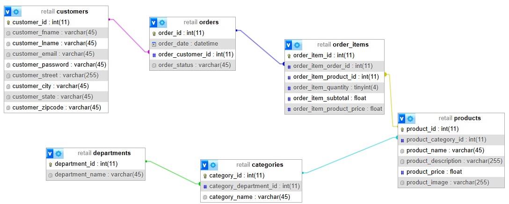
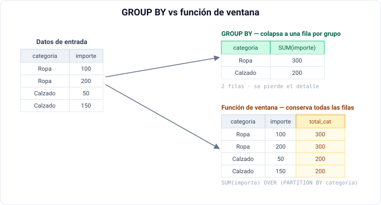
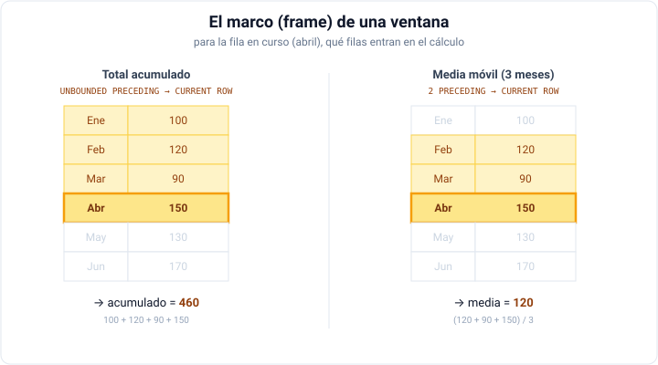
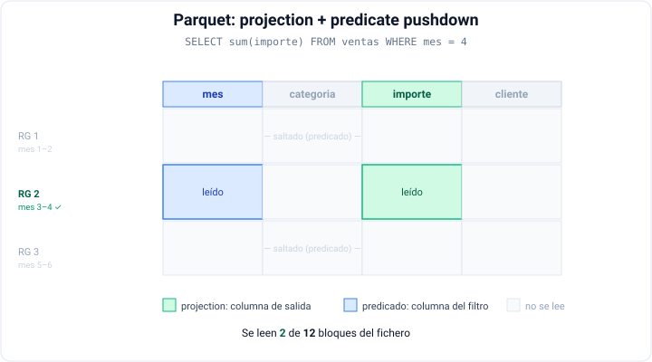

SQL analítico
Changelog:
- Nueva creación — Julio 2026
SQL sigue siendo la habilidad más demandada en ingeniería de datos, y con DuckDB podemos practicar SQL analítico sobre millones de filas sin levantar ningún servidor.
En la primera sesión que hablamos sobre el ciclo de vida del dato situamos el SQL en la fase de transformación. Ahora nos remangamos: aprenderemos SQL analítico (el que resuelve preguntas de negocio, no el que mantiene una aplicación transaccional) y lo haremos con DuckDB, una herramienta que nos acompañará durante buena parte del bloque.
Conviene separar dos mundos que usan el mismo lenguaje:
- El SQL transaccional (OLTP), centrado en insertar, actualizar y leer filas concretas de una aplicación en producción. Es el que ya conoces de módulos previos de bases de datos.
- El SQL analítico (OLAP), centrado en agregar, comparar y ordenar grandes volúmenes de datos históricos para responder preguntas: ¿qué categorías crecen mes a mes?, ¿quiénes son mis mejores clientes?, ¿qué producto lidera en cada departamento?.
Este segundo es el que trabaja a diario un ingeniero o un analytics engineer, y el que veremos hoy.
Caso 0: cuando los datos no caben en Excel¶
Antes de entrar en definiciones, un problema muy concreto. Imagina que te pasan un documento ventas.csv con 15 millones de filas (unos 632 MB) y una pregunta sencilla: ¿cuántas ventas superan los 100 €?
Lo primero que muchos intentan —abrirlo con Excel— falla por partida doble: una hoja de cálculo se queda en 1.048.576 filas (no verías ni una décima parte de los datos) y, aunque cupieran, cargar el fichero entero pondría el equipo en un aprieto. Probemos entonces con las dos herramientas que sí pueden: Pandas, que ya conoces, y DuckDB.
import pandas as pd
df = pd.read_csv("ventas.csv") # carga TODO el fichero en memoria
n = (df["importe"] > 100).sum() # filtra y cuenta
print(n) # 4310874
Funciona, pero antes de poder filtrar, Pandas necesita cargar el CSV entero en memoria como un DataFrame. Con un fichero que se acercara al tamaño de tu RAM, sencillamente no cabría.
import duckdb
n = duckdb.sql("SELECT count(*) FROM 'ventas.csv' WHERE importe > 100").fetchone()[0]
print(n) # 4310874
Una sola línea de SQL sobre el fichero tal cual, sin importarlo. DuckDB lo recorre en streaming, por lotes, quedándose solo con lo que la consulta necesita, así que nunca lo carga entero.
Si ejecutamos ambos fragmentos, obtendremos la misma respuesta, pero con diferencias muy notables respecto al tiempo y la memoria consumida:
| Herramienta | Respuesta | Tiempo | Pico de memoria |
|---|---|---|---|
| pandas | 4 310 874 | ~4.9s | ~1,8 GB |
| DuckDB | 4 310 874 | ~0.8s | ~360 MB |
Cifras orientativas sobre un CSV de aproximadamente 632 MB y 15 millones de filas.
Lo revelador no es que DuckDB sea más rápido, sino cómo escala la memoria: la prueba con Pandas crece con el fichero y desborda al acercarse a la RAM, mientras que la de DuckDB se mantiene casi plana. Esa diferencia es justo la razón por la que, como veremos, muchas veces no hace falta Spark.
¿Quieres reproducirlo? Genera tú el CSV
Puedes crear un fichero como este en menos de un minuto con NumPy, generándolo por bloques para no llenar la memoria durante la propia generación:
import numpy as np, csv
rng = np.random.default_rng(42)
N = 15_000_000
cats = np.array(["Ropa", "Calzado", "Deporte", "Hogar", "Electronica", "Juguetes"])
provs = np.array(["Alicante", "Valencia", "Madrid", "Barcelona", "Sevilla", "Murcia"])
base = np.datetime64("2023-01-01")
with open("ventas.csv", "w", newline="") as f:
w = csv.writer(f)
w.writerow(["fecha", "tienda_id", "producto_id", "categoria", "provincia", "importe"])
hecho = 0
while hecho < N:
n = min(1_000_000, N - hecho)
fecha = (base + rng.integers(0, 730, n).astype("timedelta64[D]")).astype(str)
w.writerows(zip(fecha,
rng.integers(1, 501, n),
rng.integers(1, 10001, n),
cats[rng.integers(0, len(cats), n)],
provs[rng.integers(0, len(provs), n)],
np.round(rng.gamma(2.0, 40.0, n), 2)))
hecho += n
Para comparar los rendimientos, puedes instalar las librerías necesarias con:
pip install memory_profiler setuptools
y, en un cuaderno de Jupyter, tras cargar la extensión de IPython memory_profiler (%load_ext memory_profiler), ejecutar:
%%time
%%memit
import duckdb
n = duckdb.sql("SELECT count(*) FROM 'ventas.csv' WHERE importe > 100").fetchone()[0]
# peak memory: 1198.71 MiB, increment: 391.24 MiB
# CPU times: total: 2.11 s
# Wall time: 887 ms
Donde para cada pregunta, tenemos una métrica:
- "¿Cabe en RAM?" → peak: el cuaderno ha necesitado un máximo de 1198.71 MiB de RAM para responder.
- "¿Cuánto pesa esta operación?" → increment: la celda ha necesitado 391.24 MiB de RAM adicionales para responder.
- "¿Cuánto tarda para el usuario?" → wall time: la celda ha tardado 887 ms en devolver el resultado.
- "¿Cuánto cómputo total?" → CPU time: la celda ha consumido 2.11 s de CPU (en paralelo, si tu equipo tiene varios núcleos).
Es importe que quede claro que esto no significa que Pandas sea peor. Es una herramienta excelente y, de hecho, ambas se combinan de maravilla (DuckDB puede devolvernos el resultado directamente como DataFrame). Pero para analítica sobre grandes volúmenes con SQL, DuckDB es la pieza natural.
DuckDB¶
Una vez que ya hemos visto su utilidad, vamos a profundizar en qué es DuckDB y cómo sacarle el máximo partido. DuckDB es una base de datos analítica embebida: se ejecuta dentro de tu propio proceso (Python, un cuaderno o la CLI), sin servidor que instalar ni administrar. La comparación es directa: así como SQLite es la base de datos transaccional embebida por excelencia, DuckDB es su equivalente para la analítica (OLAP).
Sus características lo hacen ideal tanto para el mercado laboral como para el aprendizaje:
- Cero configuración: una única dependencia (
pip install duckdb) y a trabajar. No hay procesos, puertos ni clústeres. - Motor columnar y vectorizado: procesa los datos por columnas y en lotes, con un rendimiento excelente en consultas analíticas sobre millones de filas con cualquier ordenador de usuario.
- Lee ficheros directamente: consulta CSV, Parquet o JSON in situ, sin cargarlos previamente, incluso desde almacenamiento de objetos como S3 o MinIO.
- Se integra con todo: Pandas, Polars, Arrow... y se puede conectar a bases de datos externas como MySQL o PostgreSQL.
- SQL moderno y cómodo: incorpora extensiones de sintaxis que reducen mucho el código repetitivo (lo veremos en el apartado de SQL amigable).
¿DuckDB o Spark?
Es la pregunta que da forma a toda esta sesión. DuckDB brilla cuando los datos caben en una sola máquina (que hoy, con decenas de GB de RAM, es casi siempre): un único nodo, sin coste de coordinación. Spark aparece cuando necesitamos procesamiento distribuido sobre volúmenes que no caben en una máquina, o cuando ya vivimos en un clúster.
La lección profesional es clara: no debemos utilizar Spark por defecto; un buen ingeniero de datos justifica cuándo escalar. Empezaremos con DuckDB precisamente para interiorizar esta idea.
Primeros pasos¶
Podemos usar DuckDB desde su intérprete de línea de comandos (CLI) o desde Python. Durante el curso trabajaremos sobre todo desde Python y cuadernos Jupyter, pero la CLI es muy cómoda para exploración rápida.
import duckdb
# Conexión en memoria (los datos viven mientras dure el proceso)
con = duckdb.connect()
con.sql("SELECT 'Hola DuckDB desde IABD' AS saludo").show()
# ┌────────────────────────┐
# │ saludo │
# │ varchar │
# ├────────────────────────┤
# │ Hola DuckDB desde IABD │
# └────────────────────────┘
Para poder ejecutar DuckDB desde la línea de comandos, primero hay que instalarlo. En Linux mediante apt install duckdb o yum install duckdb y con MacOS basta con brew install duckdb (si tienes Homebrew). En el caso de Windows, puedes descargar el ejecutable desde duckdb.org o si empleases Chocolatey, con choco install duckdb.
Si no queremos instalarlo, podemos usar nuestro stack de Docker, ya que el nodo lab ya tiene DuckDB instalado y listo para usarse mediante docker exec -it iabd-lab bash.
Tras la instalación, basta con ejecutar duckdb en la terminal para entrar en el intérprete. Una vez dentro, podemos lanzar consultas SQL directamente:
duckdb
# DuckDB v1.5.4 (Variegata)
# Enter ".help" for usage hints.
memory D .version
# DuckDB v1.5.4 (Variegata) 08e34c447b
# msvc-1951
Sobre la línea de comandos, podemos ejecutar consultas SQL directamente:
SELECT 'Hola DuckDB desde el CLI en IABD' AS saludo;
# ┌──────────────────────────────────┐
# │ saludo │
# │ varchar │
# ├──────────────────────────────────┤
# │ Hola DuckDB desde el CLI en IABD │
# └──────────────────────────────────┘
Para cerrar la sesión del CLI, usaremos Ctrl+D.
Por defecto la base de datos es en memoria: al cerrar el proceso, los datos desaparecen. Si queremos persistencia, basta con indicar un fichero: todo lo que creemos se guardará en él.
# Base de datos persistente en un único fichero
con = duckdb.connect("retail.duckdb")
En memoria vs persistente
Para explorar ficheros y hacer analítica ad hoc, lo más normal es trabajar en memoria. Reserva el fichero .duckdb para cuando quieras conservar tablas ya transformadas entre sesiones de trabajo.
Cargando datos¶
retail_db
Durante el curso trabajaremos con el conjunto de datos retail_db, un clásico dataset de comercio electrónico. Contiene millones de filas y varias tablas: customers, orders, order_items, products, categories y departments.
El modelo físico de la base de datos es el siguiente:

El script DDL para MariaDB lo puedes descargar desde aquí. En cambio, si quieres los datos ya exportados, puedes descargarlos en formato CSV desde aquí.
Aunque ya lo vimos con el caso 0 al cargar el fichero de ventas.csv, una de las cosas que más llama la atención de DuckDB es que no necesitamos una fase de importación previa, ya que podemos consultar el fichero directamente:
-- Consultar un CSV sin cargarlo (detección automática de tipos y cabeceras)
SELECT * FROM read_csv_auto('retail_db_customers.csv') LIMIT 5;
-- ┌─────────────┬────────────────┬────────────────┬───┬───────────────┬────────────────┬──────────────────┐
-- │ customer_id │ customer_fname │ customer_lname │ … │ customer_city │ customer_state │ customer_zipcode │
-- │ int64 │ varchar │ varchar │ … │ varchar │ varchar │ varchar │
-- ├─────────────┼────────────────┼────────────────┼───┼───────────────┼────────────────┼──────────────────┤
-- │ 1 │ Richard │ Hernandez │ … │ Brownsville │ TX │ 78521 │
-- │ 2 │ Mary │ Barrett │ … │ Littleton │ CO │ 80126 │
-- │ 3 │ Ann │ Smith │ … │ Caguas │ PR │ 00725 │
-- │ 4 │ Mary │ Jones │ … │ San Marcos │ CA │ 92069 │
-- │ 5 │ Robert │ Hudson │ … │ Caguas │ PR │ 00725 │
-- └─────────────┴────────────────┴────────────────┴───┴───────────────┴────────────────┴──────────────────┘
-- 5 rows use .last to show entire result 9 columns (6 shown)
-- O aún más corto: DuckDB infiere el lector por la extensión
SELECT * FROM 'retail_db_customers.csv' LIMIT 5;
-- Parquet
SELECT count(*) FROM 'orders.parquet';
Como has visto, DuckDB permite importar datos de distintos formatos (CSV, Parquet, JSON...) y de distintas fuentes (ficheros locales, almacenamiento de objetos, bases de datos externas...). La sintaxis es muy sencilla: basta con indicar la ruta del fichero entre comillas simples.
Si queremos materializar el resultado como una tabla (por ejemplo, para reutilizarla), usaremos el patron CTAS (CREATE TABLE ... AS SELECT):
CREATE TABLE customers AS SELECT * FROM 'retail_db_customers.csv';
Además de hacer las consultas directamente sobre los CSV, podemos cargar todas las tablas en memoria para trabajar con ellas como si fueran locales. Para ello, podemos hacerlo de dos maneras según de dónde partamos:
CREATE TABLE customers AS SELECT * FROM 'retail_db_customers.csv';
CREATE TABLE orders AS SELECT * FROM 'retail_db_orders.csv';
CREATE TABLE order_items AS SELECT * FROM 'retail_db_order_items.csv';
CREATE TABLE products AS SELECT * FROM 'retail_db_products.csv';
CREATE TABLE categories AS SELECT * FROM 'retail_db_categories.csv';
CREATE TABLE departments AS SELECT * FROM 'retail_db_departments.csv';
-- DuckDB puede leer directamente de la BD MySQL del stack Docker
INSTALL mysql;
LOAD mysql;
ATTACH 'host=mysql-datos user=iabd password=iabd database=retail_db'
AS retail (TYPE mysql);
-- Y consultar sus tablas como si fueran locales
SELECT count(*) FROM retail.orders;
DuckDB también lee de MinIO/S3
Con la extensión httpfs podemos apuntar a nuestro object storage y consultar Parquet remoto directamente. Lo trabajaremos en la sesión de almacenamiento de objetos, pero recuerda que es posible:
INSTALL httpfs;
LOAD httpfs;
SELECT * FROM 's3://processed/ventas/*.parquet' LIMIT 10;
Y funciona también en el otro sentido: si ya tienes un DataFrame de Pandas en tu cuaderno, DuckDB puede consultarlo directamente por el nombre de la variable, sin importarlo, y devolverte el resultado como otro DataFrame con .df():
import duckdb
import pandas as pd
clientes = pd.read_csv("retail_db_customers.csv") # un DataFrame de pandas cualquiera
# DuckDB detecta la variable 'clientes' y la consulta como si fuera una tabla
duckdb.sql("SELECT customer_state, count(*) AS n FROM clientes GROUP BY ALL").show()
# ...y con .df() recuperamos el resultado como DataFrame para seguir en Pandas
top = duckdb.sql(
"SELECT customer_state, count(*) AS n FROM clientes GROUP BY ALL ORDER BY n DESC"
).df()
Este ida y vuelta es prácticamente gratis: por debajo, DuckDB comparte memoria con pandas y PyArrow mediante Apache Arrow (que vimos en la sesión anterior), sin copiar los datos. Así puedes mezclar libremente SQL para la parte analítica y pandas para lo que ya dominas.
Guardando datos¶
Recuerda que, por defecto, las tablas que creas viven en memoria, de manera que cuando cierras el proceso (o reinicias el kernel de Jupyter), desaparecen. Si acabas de cargar y transformar retail_db y quieres retomarlo en la próxima sesión sin repetir todo, hay que persistir la base de datos en disco.
Si ya tienes las tablas en memoria, se adjunta un fichero y se copia el catálogo entero de una vez (memory es el nombre interno de la base en memoria):
con.sql("ATTACH 'retail.duckdb' AS disco") # la ruta va entre comillas simples
con.sql("COPY FROM DATABASE memory TO disco") # vuelca esquemas, tablas, datos y vistas
con.sql("DETACH disco")
ATTACH 'retail.duckdb' AS disco;
COPY FROM DATABASE memory TO disco;
DETACH disco;
En la siguiente sesión que vayas a trabajar con DuckDB, abres el fichero directamente y sigues sobre las tablas ya creadas, sin recargar los CSV:
con = duckdb.connect("retail.duckdb")
con.sql("SHOW TABLES").show() # customers, orders, order_items...
Nos conectamos directamente al fichero:
duckdb retail.duckdb
Las rutas van entre comillas simples
En DuckDB, '...' es una cadena (texto) y "..." es un identificador (nombre de tabla o columna). Como la ruta de un fichero es texto, va siempre entre comillas simples; con comillas dobles obtendrás un Parser Error.
Como vimos en Primeros pasos, si sabes desde el principio que quieres persistencia, puedes conectar directamente al fichero (duckdb.connect("retail.duckdb")): así cada CREATE TABLE se escribe en disco y no necesitas el paso de copia. El COPY FROM DATABASE es justo para rescatar una sesión que empezaste en memoria.
Alternativa portable: EXPORT / IMPORT DATABASE
Si necesitas un volcado inspeccionable y versionable (o mover datos entre versiones de DuckDB), EXPORT DATABASE genera una carpeta con el esquema en SQL y los datos en Parquet:
EXPORT DATABASE 'export_retail' (FORMAT PARQUET);
Crea un schema.sql, un load.sql y un .parquet por tabla. Para recuperarlo en una base nueva:
IMPORT DATABASE 'export_retail';
Para el día a día, el fichero .duckdb único es más cómodo; en cambio, para archivar, compartir o inspeccionar, el EXPORT es más transparente.
SQL amigable¶
Antes de entrar en la analítica, merece la pena conocer las extensiones de sintaxis de DuckDB, conocidas como friendly SQL. No son SQL estándar, pero ahorran tanto tecleo —y hacen las consultas tan legibles— que otros motores modernos (BigQuery, Databricks, Snowflake...) las están adoptando. Las usaremos durante todo el bloque, así que conviene tenerlas a mano desde el principio.
Proyecciones más sencillas¶
El comodín * de DuckDB es mucho más flexible que el habitual: podemos excluir columnas mediante EXCLUDE, reemplazar una sin reescribir el resto con REPLACE o seleccionar por patrón con COLUMNS:
-- Todas las columnas MENOS las indicadas
SELECT * EXCLUDE (customer_password, customer_email) FROM customers;
-- Todas las columnas, pero transformando una al vuelo
SELECT * REPLACE (upper(customer_state) AS customer_state) FROM customers;
-- Solo las columnas que casan con una expresión regular
SELECT customer_id, COLUMNS('customer_.*name') FROM customers LIMIT 5;
COLUMNS brilla cuando lo combinamos con una función: aplica la misma operación a todas las columnas que cumplen el patrón, sin repetirla. Por ejemplo, contar los valores no nulos de todas las columnas customer_* de una sola vez:
SELECT COUNT(COLUMNS('customer_.*name*')) FROM customers;
-- ┌────────────────┬────────────────┐
-- │ customer_fname │ customer_lname │
-- │ int64 │ int64 │
-- ├────────────────┼────────────────┤
-- │ 12435 │ 12435 │
-- └────────────────┴────────────────┘
Cláusulas más cortas¶
Podemos empezar por FROM (autocompletado más cómodo y lectura más natural) e incluso omitir el SELECT cuando queremos todas las columnas. Y con GROUP BY ALL / ORDER BY ALL nos ahorramos repetir la lista de columnas no agregadas:
-- FROM primero; el SELECT es opcional si queremos todo
FROM orders LIMIT 5;
-- Agrupar y ordenar por TODAS las columnas no agregadas, sin nombrarlas
SELECT order_status, count(*) AS pedidos
FROM orders
GROUP BY ALL
ORDER BY ALL;
-- LIMIT admite también un porcentaje del total
FROM categories LIMIT 20%;
Reutilizando los alias¶
Este es uno de los mayores ahorros del día a día. En la mayoría de motores, un alias definido en el SELECT solo puede reutilizarse en el ORDER BY; usarlo en el propio SELECT o en el WHERE obliga a repetir la expresión o a envolverla en una subconsulta. DuckDB elimina esa restricción y permite reutilizar los alias en cualquier parte de la consulta:
SELECT
order_item_subtotal AS importe,
round(importe * 0.21, 2) AS iva, -- reutiliza 'importe'
importe + iva AS total -- reutiliza 'importe' e 'iva'
FROM order_items
WHERE importe > 100 -- ...y el alias vale también en el WHERE
ORDER BY total DESC;
Alias «por delante»
DuckDB admite además escribir el alias antes de la expresión, con nombre: expresión en lugar de expresión AS nombre. Así, SELECT importe: order_item_subtotal equivale a SELECT order_item_subtotal AS importe. Es cuestión de gustos, pero se lee muy bien.
Expresiones más cómodas¶
Y un puñado de atajos que se van acumulando a lo largo de una consulta:
-- Encadenar funciones con el operador punto (se lee de izquierda a derecha)
SELECT customer_fname.trim().upper() AS nombre FROM customers;
-- equivale a upper(trim(customer_fname))
-- Separadores de miles en literales numéricos, como en Python
SELECT count() AS pedidos -- count() es un atajo de count(*)
FROM orders
WHERE order_id < 1_000_000;
Comas finales
DuckDB admite comas finales en las listas de columnas (SELECT a, b, c, FROM ...). Parece un detalle menor, pero elimina uno de los errores más molestos al editar y reordenar consultas.
Y esto es solo la puerta de entrada. Más adelante veremos el azúcar sintáctico más potente de DuckDB, el pensado para la analítica: QUALIFY (filtrar por el resultado de una función de ventana) y PIVOT/UNPIVOT (reorganizar tablas). En la documentación de friendly SQL encontrarás muchos más, como la cláusula FILTER o los agregados «top-N» (arg_max, max_by).
Autoevaluación: SQL amigable
A continuación tienes 20 consultas resueltas que repasan los atajos de SQL amigable de este apartado, sobre las tablas de retail_db. Intenta escribir cada una por tu cuenta y luego despliega para compararla con una solución posible (casi siempre hay más de una).
1. Todas las columnas de customers salvo las sensibles (customer_password y customer_email).
SELECT * EXCLUDE (customer_password, customer_email)
FROM customers
LIMIT 5;
Atajos: SELECT * EXCLUDE.
2. Listar productos con el precio (product_price) redondeado a euros enteros, sin tocar el resto de columnas.
SELECT * REPLACE (round(product_price) AS product_price)
FROM products
LIMIT 5;
Atajos: SELECT * REPLACE.
3. El customer_id y solo las columnas de nombre del cliente (las que acaban en name).
SELECT customer_id, COLUMNS('customer_.*name')
FROM customers
LIMIT 5;
Atajos: COLUMNS() con expresión regular.
4. Contar de una sola vez los valores no nulos de todas las columnas customer_*.
SELECT COUNT(COLUMNS('customer_.*'))
FROM customers;
Atajos: COLUMNS() aplicado a una función de agregación.
5. Poner en mayúsculas el nombre y los apellidos del cliente en una sola expresión.
SELECT customer_id, upper(COLUMNS('customer_.*name'))
FROM customers
LIMIT 5;
Atajos: COLUMNS() aplicado a una función escalar (upper).
6. Mostrar el contenido completo de departments sin escribir SELECT.
FROM departments;
Atajos: Sintaxis FROM primero, con el SELECT omitido.
7. Número de pedidos por order_status, empezando la consulta por FROM.
FROM orders
SELECT order_status, count() AS pedidos
GROUP BY ALL;
Atajos: FROM primero + GROUP BY ALL + count().
8. Número de clientes por estado, sin repetir columnas en el GROUP BY.
SELECT customer_state, count() AS clientes
FROM customers
GROUP BY ALL
ORDER BY clientes DESC;
Atajos: GROUP BY ALL + count().
9. Estados y ciudades distintos de los clientes, con un orden determinista.
SELECT DISTINCT customer_state, customer_city
FROM customers
ORDER BY ALL
LIMIT 10;
Atajos: ORDER BY ALL.
10. Una muestra equivalente a la mitad de las filas de categories.
FROM categories
LIMIT 50%;
Atajos: LIMIT con porcentaje.
11. Para cada línea de pedido: importe, IVA (21 %) y total, reutilizando los alias anteriores.
SELECT
order_item_subtotal AS importe,
round(importe * 0.21, 2) AS iva,
importe + iva AS total
FROM order_items
LIMIT 10;
Atajos: Alias reutilizables dentro del propio SELECT.
12. Líneas de pedido de más de 500 €, filtrando por el alias importe.
SELECT order_item_id, order_item_subtotal AS importe
FROM order_items
WHERE importe > 500
ORDER BY importe DESC;
Atajos: Alias del SELECT reutilizado en el WHERE.
13. Ingresos por categoría, quedándote solo con las que superan los 100 000 € (filtra por el alias en el HAVING).
SELECT c.category_name, SUM(oi.order_item_subtotal) AS ingresos
FROM order_items oi
JOIN products p ON p.product_id = oi.order_item_product_id
JOIN categories c ON c.category_id = p.product_category_id
GROUP BY ALL
HAVING ingresos > 100000
ORDER BY ingresos DESC;
Atajos: Alias reutilizado en el HAVING + GROUP BY ALL.
14. order_id y order_status de los 5 primeros pedidos, renombrando las columnas con la sintaxis de alias «por delante».
SELECT id: order_id, estado: order_status
FROM orders
LIMIT 5;
Atajos: Alias «por delante» (nombre: expresión).
15. Ciudad del cliente sin espacios sobrantes y en minúsculas, encadenando funciones con el operador punto.
SELECT customer_city.trim().lower() AS ciudad
FROM customers
LIMIT 5;
Atajos: Encadenado de funciones con el operador punto.
16. Número de pedidos con order_id por debajo de 10 000, usando un literal numérico legible.
SELECT count() AS pedidos
FROM orders
WHERE order_id < 10_000;
Atajos: Separador _ en el literal numérico + count().
17. Número total de líneas de pedido, con el atajo de count.
SELECT count() AS lineas
FROM order_items;
Atajos: count() como atajo de count(*).
18. Seleccionar customer_id, customer_fname y customer_state dejando una coma final tras la última columna.
SELECT
customer_id,
customer_fname,
customer_state,
FROM customers
LIMIT 5;
Atajos: Coma final en la lista de columnas.
19. Los 5 estados con más clientes: FROM primero y alias «por delante».
FROM customers
SELECT estado: customer_state, clientes: count()
GROUP BY ALL
ORDER BY clientes DESC
LIMIT 5;
Atajos: FROM primero + alias «por delante» + GROUP BY ALL.
20. Vista «segura» de customers (sin password ni email), con FROM primero y una coma final en la lista de exclusión.
FROM customers
SELECT * EXCLUDE (customer_password, customer_email,)
LIMIT 5;
Atajos: FROM primero + SELECT * EXCLUDE + coma final, todo junto.
El repertorio analítico¶
Se supone que ya sabemos SQL ¿verdad? Si no, deberías repasar primero el módulo de Bases de Datos antes de continuar.
En esta sesión no vamos a aprender SQL, sino a aprender a usarlo para analítica. Y eso significa saber qué herramienta tocar en cada momento: no es lo mismo filtrar filas que agruparlas, ni sumarizar que conservar el detalle. Cada operación tiene su coste y su lugar en la escalera de dificultad. Así pues, vamos a ordenarla por dificultad, la cual coincide, muy convenientemente, con los tres niveles en los que un motor analítico opera sobre los datos.
Es importante tener presente esta escalera para saber siempre qué herramienta toca:
- Nivel 1 — sobre cada fila. Una fila entra, una fila sale: filtrar, clasificar con
CASE, tratar nulos, convertir tipos, manipular fechas y texto. - Nivel 2 — agrupando y colapsando. Muchas filas se resumen en una:
JOIN+GROUP BY, subtotales y pivotes. Es el terreno clásico del reporting. - Nivel 3 — agrupando sin colapsar. El cálculo mira a un conjunto de filas relacionadas pero conserva el detalle. Son las funciones de ventana, la parte más potente de SQL para analítica, y la que más se repite en data science y machine learning.
Pero antes del nivel 1, un paso previo de coste casi nulo que debemos hacer siempre, entender lo que acabamos de cargar.
Exploración inicial¶
Dos comandos hacen la exploración inicial mucho más rápida: DESCRIBE (estructura y tipos) y SUMMARIZE (estadísticas por columna: mínimos, máximos, nulos, cardinalidad). Y sobre datos grandes, el muestreo (USING SAMPLE) y los agregados aproximados evitan recorrer todo:
DESCRIBE orders;
-- ┌─────────────────────────────┐
-- │ orders │
-- │ │
-- │ order_id bigint │
-- │ order_date timestamp │
-- │ order_customer_id bigint │
-- │ order_status varchar │
-- └─────────────────────────────┘
SUMMARIZE orders;
-- ┌───────────────────┬─────────────┬─────────────────────┬─────────────────────┬───────────────┬───┬─────────────────────────┬──────────────────────┬──────────────────────┬───────┬─────────────────┐
-- │ column_name │ column_type │ min │ max │ approx_unique │ … │ q25 │ q50 │ q75 │ count │ null_percentage │
-- │ varchar │ varchar │ varchar │ varchar │ int64 │ … │ varchar │ varchar │ varchar │ int64 │ decimal(9,2) │
-- ├───────────────────┼─────────────┼─────────────────────┼─────────────────────┼───────────────┼───┼─────────────────────────┼──────────────────────┼──────────────────────┼───────┼─────────────────┤
-- │ order_id │ BIGINT │ 1 │ 68883 │ 62614 │ … │ 17221 │ 34442 │ 51663 │ 68883 │ 0.00 │
-- │ order_date │ TIMESTAMP │ 2013-07-25 00:00:00 │ 2014-07-24 00:00:00 │ 399 │ … │ 2013-10-24 01:58:44.42… │ 2014-01-20 05:46:39… │ 2014-04-20 13:14:38… │ 68883 │ 0.00 │
-- │ order_customer_id │ BIGINT │ 1 │ 12435 │ 11279 │ … │ 3119 │ 6196 │ 9325 │ 68883 │ 0.00 │
-- │ order_status │ VARCHAR │ CANCELED │ SUSPECTED_FRAUD │ 10 │ … │ NULL │ NULL │ NULL │ 68883 │ 0.00 │
-- └───────────────────┴─────────────┴─────────────────────┴─────────────────────┴───────────────┴───┴─────────────────────────┴──────────────────────┴──────────────────────┴───────┴─────────────────┘
-- Una muestra del 5 % para prototipar rápido
SELECT * FROM order_items USING SAMPLE 5%;
-- Cardinalidad aproximada, mucho más rápida sobre millones de filas
SELECT approx_count_distinct(order_customer_id) FROM orders;
Nivel 1: Operar fila a fila¶
Las operaciones más básicas transforman cada fila de forma independiente: no hay agrupación ni combinación de filas. Son las que más se repiten y las más sencillas.
Para filtrar, ordenar y lógica condicional, a las cláusulas que ya conoces (WHERE, IN, BETWEEN, LIKE/ILIKE, ORDER BY, LIMIT/OFFSET) DuckDB añade atajos como ORDER BY ALL. Recuerda que puedes usar CASE para aplicar lógica condicional y clasificar filas:
SELECT
order_id,
order_item_subtotal,
CASE
WHEN order_item_subtotal >= 500 THEN 'alto'
WHEN order_item_subtotal >= 100 THEN 'medio'
ELSE 'bajo'
END AS segmento
FROM order_items;
Para tratar nulos, disponemos de COALESCE (primer valor no nulo), NULLIF (convierte a nulo si coincide) e IS [NOT] NULL. Para convertir tipos, CAST (o ::), y muy útil con datos sucios, TRY_CAST, que devuelve NULL en vez de fallar:
SELECT
COALESCE(customer_state, 'DESCONOCIDA') AS provincia,
TRY_CAST(customer_zipcode AS INTEGER) AS cp -- NULL si no es convertible
FROM customers;
En cuanto a funciones, DuckDB trae un juego completo de funciones de fecha (date_trunc, extract, strftime, aritmética con INTERVAL, current_date) y de texto (concatenación con ||, upper/lower/trim, split_part, y expresiones regulares con regexp_matches/regexp_replace):
SELECT
date_trunc('month', order_date) AS mes,
extract('dow' FROM order_date) AS dia_semana,
upper(order_status) AS estado
FROM orders;
Gestión de duplicados
Para eliminar duplicados exactos basta con utilizar DISTINCT. Pero cuando lo que queremos es un registro por clave (el más reciente de cada cliente, el de mayor importe...) necesitas numerar dentro de cada grupo: eso ya es una función de ventana, y lo veremos en el nivel 3.
Nivel 2: Agrupar y combinar¶
Subimos un escalón. En el nivel 2, varias filas colaboran para producir un resultado. Combinamos tablas con JOIN y las resumimos con GROUP BY; el detalle individual desaparece a cambio de una visión agregada. Es el objetivo de la mayoría de los informes y análisis.
Combinaciones y agregaciones¶
Damos por conocidas las combinaciones (INNER, LEFT, RIGHT, FULL) que ya conocemos de cursos anteriores. En analítica, el patrón más habitual es combinar y agregar: unir las tablas de hechos con sus descripciones y resumir con funciones de agregación (COUNT, SUM, AVG, MIN, MAX).
-- Ingresos totales por categoría
SELECT
c.category_name,
SUM(oi.order_item_subtotal).round(2) AS ingresos,
COUNT(DISTINCT oi.order_item_order_id) AS num_pedidos
FROM order_items oi
JOIN products p ON p.product_id = oi.order_item_product_id
JOIN categories c ON c.category_id = p.product_category_id
GROUP BY ALL
ORDER BY ingresos DESC;
Recuerda la diferencia entre WHERE (filtra filas antes de agrupar) y HAVING (filtra grupos después de agregar):
SELECT c.category_name, SUM(oi.order_item_subtotal).round(2) AS ingresos
FROM order_items oi
JOIN products p ON p.product_id = oi.order_item_product_id
JOIN categories c ON c.category_id = p.product_category_id
GROUP BY ALL
HAVING ingresos > 100000
ORDER BY ingresos DESC;
Hasta aquí hemos combinado tablas a lo ancho, con JOIN. También podemos combinarlas a lo alto, apilando resultados: UNION (y UNION ALL), INTERSECT y EXCEPT operan sobre varias consultas y son cómodas para comparar poblaciones (por ejemplo, clientes con pedidos completados frente a cancelados).
Agregaciones multinivel¶
Un GROUP BY normal nos da el detalle: una fila por cada combinación de valores. Pero un informe casi siempre quiere, en la misma tabla, los subtotales y el total general. Sin ayuda tendríamos que lanzar una consulta por cada nivel y apilarlas con UNION ALL; el SQL analítico lo resuelve con tres cláusulas que añaden esas filas de resumen automáticamente: ROLLUP, CUBE y GROUPING SETS.
Para ver el mecanismo con una tabla que quepa entera en pantalla, partimos de los ingresos por categoría y trimestre, reducidos a dos categorías y dos trimestres. En retail_db esta tabla la produce un GROUP BY categoria, trimestre normal; aquí la escribimos a mano para centrarnos en lo nuevo:
CREATE TABLE ventas_trim AS SELECT * FROM (VALUES
('Calzado', 1, 12000),
('Calzado', 2, 9000),
('Pesca', 1, 5000),
('Pesca', 2, 7000)
) t(categoria, trimestre, ingresos);
Si consultamos la tabla, vemos el detalle:
| categoria | trimestre | ingresos |
|---|---|---|
| Calzado | 1 | 12000 |
| Calzado | 2 | 9000 |
| Pesca | 1 | 5000 |
| Pesca | 2 | 7000 |
Un GROUP BY categoria, trimestre corriente se limita a devolver ese mismo detalle. La pregunta es cómo añadir, en la misma consulta, «cuánto suma cada categoría» y «cuánto suma todo».
ROLLUP¶
ROLLUP (categoria, trimestre) permite obtener subtotales jerárquicos, calculando el detalle y, además, acumulando (o replegando si hacemos una traducción directa) la lista de derecha a izquierda: primero suma los trimestres dentro de cada categoría (un subtotal por categoría) y, al final, lo suma todo (el total general).
SELECT categoria, trimestre, SUM(ingresos) AS ingresos
FROM ventas_trim
GROUP BY ROLLUP (categoria, trimestre)
ORDER BY categoria, trimestre;
Al ejecutar la consulta, obtenemos el detalle de siempre más tres filas nuevas, con NULL en las columnas que se han agregado:
┌───────────┬───────────┬──────────┐
│ categoria │ trimestre │ ingresos │
│ varchar │ int32 │ int128 │
├───────────┼───────────┼──────────┤
│ Calzado │ 1 │ 12000 │
│ Calzado │ 2 │ 9000 │
│ Calzado │ NULL │ 21000 │
│ Pesca │ 1 │ 5000 │
│ Pesca │ 2 │ 7000 │
│ Pesca │ NULL │ 12000 │
│ NULL │ NULL │ 33000 │
└───────────┴───────────┴──────────┘
Las tres filas nuevas son las que añade ROLLUP: el subtotal de cada categoría (Calzado = 21 000, Pesca = 12 000, con el trimestre en NULL porque se ha sumado sobre todos) y, al final, el total general (33 000, con ambas columnas en NULL). El resto es el detalle de siempre.
Esos NULL no son datos que falten: marcan "aquí he agregado por encima de esta columna". Para que el informe sea legible conviene etiquetarlos, y como en datos reales podría haber NULL auténticos, no basta con mirar la columna: usamos GROUPING(), que devuelve 1 exactamente en las filas de resumen:
SELECT
CASE WHEN GROUPING(categoria) = 1 THEN 'Total' ELSE categoria END AS categoria,
CASE WHEN GROUPING(trimestre) = 1 THEN 'Total' ELSE trimestre::VARCHAR END AS trimestre,
SUM(ingresos) AS ingresos
FROM ventas_trim
GROUP BY ROLLUP (categoria, trimestre)
ORDER BY categoria, trimestre;
-- ┌───────────┬───────────┬──────────┐
-- │ categoria │ trimestre │ ingresos │
-- │ varchar │ varchar │ int128 │
-- ├───────────┼───────────┼──────────┤
-- │ Calzado │ 1 │ 12000 │
-- │ Calzado │ 2 │ 9000 │
-- │ Calzado │ Total │ 21000 │
-- │ Pesca │ 1 │ 5000 │
-- │ Pesca │ 2 │ 7000 │
-- │ Pesca │ Total │ 12000 │
-- │ Total │ Total │ 33000 │
-- └───────────┴───────────┴──────────┘
CUBE¶
¿Y si, además del subtotal por categoría, queremos el subtotal por trimestre (sumando todas las categorías)? Para eso está CUBE: calcula todas las combinaciones de agrupación posibles. Frente a ROLLUP, añade las filas de "total de cada trimestre" (basta cambiar ROLLUP por CUBE):
SELECT
CASE WHEN GROUPING(categoria) = 1 THEN 'Total' ELSE categoria END AS categoria,
CASE WHEN GROUPING(trimestre) = 1 THEN 'Total' ELSE trimestre::VARCHAR END AS trimestre,
SUM(ingresos) AS ingresos
FROM ventas_trim
GROUP BY CUBE (categoria, trimestre)
ORDER BY categoria, trimestre;
-- ┌───────────┬───────────┬──────────┐
-- │ categoria │ trimestre │ ingresos │
-- │ varchar │ varchar │ int128 │
-- ├───────────┼───────────┼──────────┤
-- │ Calzado │ 1 │ 12000 │
-- │ Calzado │ 2 │ 9000 │
-- │ Calzado │ Total │ 21000 │
-- │ Pesca │ 1 │ 5000 │
-- │ Pesca │ 2 │ 7000 │
-- │ Pesca │ Total │ 12000 │
-- │ Total │ 1 │ 17000 │
-- │ Total │ 2 │ 16000 │
-- │ Total │ Total │ 33000 │
-- └───────────┴───────────┴──────────┘
Las dos filas nuevas (Total / 1 = 17 000 y Total / 2 = 16 000) son los ingresos de cada trimestre sumando las dos categorías. Para recordarlo: ROLLUP recorre una jerarquía —(categoría, trimestre) → (categoría) → total, es decir n + 1 agrupaciones—, mientras que CUBE genera todos los cruces —las 2ⁿ agrupaciones posibles—. Con dos columnas, eso son 3 filas de resumen frente a 5.
Autoevaluación: CUBE
Y si hubiéramos realizado la consulta inicial con CUBE y sin GROUPING, ¿qué filas de resumen habríamos obtenido?
SELECT categoria, trimestre, SUM(ingresos) AS ingresos
FROM ventas_trim
GROUP BY CUBE (categoria, trimestre)
ORDER BY categoria, trimestre;
GROUPING SETS¶
ROLLUP y CUBE son, en el fondo, atajos. Por debajo, ambos son casos particulares de GROUPING SETS, donde enumeramos exactamente qué agrupaciones queremos, eligiendo nosotros con granularidad fina qué combinaciones nos interesa. Esto es útil cuando no interesa ni la jerarquía completa ni todos los cruces, sino unas pocas. Por ejemplo, solo los totales por categoría, por trimestre y el general (sin el detalle):
SELECT
CASE WHEN GROUPING(categoria) = 1 THEN 'Total' ELSE categoria END AS categoria,
CASE WHEN GROUPING(trimestre) = 1 THEN 'Total' ELSE trimestre::VARCHAR END AS trimestre,
SUM(ingresos) AS ingresos
FROM ventas_trim
GROUP BY GROUPING SETS ((categoria), (trimestre), ())
ORDER BY categoria, trimestre;
-- ┌───────────┬───────────┬──────────┐
-- │ categoria │ trimestre │ ingresos │
-- │ varchar │ varchar │ int128 │
-- ├───────────┼───────────┼──────────┤
-- │ Calzado │ Total │ 21000 │
-- │ Pesca │ Total │ 12000 │
-- │ Total │ 1 │ 17000 │
-- │ Total │ 2 │ 16000 │
-- │ Total │ Total │ 33000 │
-- └───────────┴───────────┴──────────┘
Cada paréntesis es una agrupación: (categoria) da el total por categoría, (trimestre) el total por trimestre y () —el conjunto vacío— el total general. Vistas así, las otras dos cláusulas son abreviaturas:
ROLLUP (a, b)equivale aGROUPING SETS ((a, b), (a), ()).CUBE (a, b)equivale aGROUPING SETS ((a, b), (a), (b), ()).
Con el mecanismo claro, así se usa sobre retail_db. Departamento y categoría forman una jerarquía natural, de modo que ROLLUP encaja de lleno:
SELECT
d.department_name,
c.category_name,
SUM(oi.order_item_subtotal).round(2) AS ingresos
FROM order_items oi
JOIN products p ON p.product_id = oi.order_item_product_id
JOIN categories c ON c.category_id = p.product_category_id
JOIN departments d ON d.department_id = c.category_department_id
GROUP BY ROLLUP (d.department_name, c.category_name)
ORDER BY d.department_name, ingresos DESC;
-- ┌─────────────────┬──────────────────────┬─────────────┐
-- │ department_name │ category_name │ ingresos │
-- │ varchar │ varchar │ double │
-- ├─────────────────┼──────────────────────┼─────────────┤
-- │ Apparel │ NULL │ 7323700.2 │
-- │ Apparel │ Cleats │ 4431942.66 │
-- │ Apparel │ Men's Footwear │ 2891757.54 │
-- │ Fan Shop │ NULL │ 17107765.88 │
-- │ Fan Shop │ Fishing │ 6929653.5 │
-- │ Fan Shop │ Camping & Hiking │ 4118425.42 │
-- │ Fan Shop │ Water Sports │ 3113844.6 │
-- │ Fan Shop │ Indoor/Outdoor Games │ 2888993.94 │
-- │ Fan Shop │ Hunting & Shooting │ 56848.42 │
-- │ Fitness │ NULL │ 280044.14 │
-- │ Fitness │ Baseball & Softball │ 94057.15 │
-- │ ...... │ ..... │ ..... │
-- │ Golf │ NULL │ 4609028.22 │
-- │ Golf │ Women's Apparel │ 3147800.0 │
-- │ Golf │ Shop By Sport │ 1309522.02 │
-- │ Golf │ Girls' Apparel │ 151706.2 │
-- │ Outdoors │ NULL │ 995582.72 │
-- │ Outdoors │ Electronics │ 255679.39 │
-- │ ...... │ ..... │ ..... │
-- │ NULL │ NULL │ 34322619.93 │
-- └─────────────────┴──────────────────────┴─────────────┘
Las filas con category_name en NULL son el subtotal de cada departamento; la que lleva ambos en NULL, el total general (exactamente el mismo patrón que en la tabla pequeña).
Pivotar¶
Los datos suelen guardarse en formato largo: una fila por hecho (categoría-trimestre), que es lo ideal para agregar, filtrar y aplicar funciones de ventana. Pero un informe se lee mejor en formato ancho, como una tabla de doble entrada: las categorías en filas y los trimestres en columnas. Pivotar es pasar de largo a ancho; despivotar, lo contrario.
Vamos a continuar con la misma tabla ventas_trim.
Usando FILTER¶
Antes de la sintaxis mágica, conviene ver qué es pivotar por dentro. Cuando pivotamos, sumamos con una condición distinta por cada columna de destino. En DuckDB eso se escribe de manera muy limpia con la cláusula FILTER, que restringe a qué filas se aplica una función de agregación:
SELECT
categoria,
SUM(ingresos) FILTER (WHERE trimestre = 1) AS "Q1",
SUM(ingresos) FILTER (WHERE trimestre = 2) AS "Q2"
FROM ventas_trim
GROUP BY categoria
ORDER BY categoria;
-- ┌───────────┬────────┬────────┐
-- │ categoria │ Q1 │ Q2 │
-- │ varchar │ int128 │ int128 │
-- ├───────────┼────────┼────────┤
-- │ Calzado │ 12000 │ 9000 │
-- │ Pesca │ 5000 │ 7000 │
-- └───────────┴────────┴────────┘
FILTER (WHERE ...) es el equivalente moderno —y mucho más legible— de SUM(CASE WHEN ... THEN ingresos END). Cada columna del informe es una suma condicionada a un trimestre. El inconveniente se ve enseguida: hay que escribir una línea por trimestre a mano; si mañana aparece un trimestre 3 en los datos, la consulta se queda corta hasta que la editemos.
PIVOT¶
Por suerte, DuckDB tiene una sintaxis nativa para pivotar, que hace exactamente lo mismo que el ejemplo anterior pero sin necesidad de escribir cada columna a mano, detectando automáticamente los valores distintos de la columna que ponemos en ON y crea una columna por cada uno:
PIVOT ventas_trim
ON trimestre
USING SUM(ingresos)
GROUP BY categoria;
-- ┌───────────┬────────┬────────┐
-- │ categoria │ 1 │ 2 │
-- │ varchar │ int128 │ int128 │
-- ├───────────┼────────┼────────┤
-- │ Pesca │ 5000 │ 7000 │
-- │ Calzado │ 12000 │ 9000 │
-- └───────────┴────────┴────────┘
Conviene identificar las tres partes de la sintaxis de PIVOT:
ON trimestre→ la columna que se despliega en columnas nuevas.USING SUM(ingresos)→ el valor de cada celda (el agregado).GROUP BY categoria→ lo que queda como filas.
Las columnas se nombran como los valores encontrados (1, 2); si en los datos apareciera un trimestre nuevo, su columna surgiría sola, sin tocar la consulta. Ese es el gran salto frente a la versión manual (donde, a cambio, éramos nosotros quienes elegíamos los nombres Q1/Q2).
UNPIVOT¶
La operación inversa toma varias columnas y las apila en dos: una con el nombre de la columna de origen y otra con su valor. Sobre la tabla ancha que produce el PIVOT anterior:
WITH ancho AS (
PIVOT ventas_trim ON trimestre USING SUM(ingresos) GROUP BY categoria
)
UNPIVOT ancho
ON "1", "2"
INTO NAME trimestre VALUE ingresos
ORDER BY categoria, trimestre;
-- ┌───────────┬───────────┬──────────┐
-- │ categoria │ trimestre │ ingresos │
-- │ varchar │ varchar │ int128 │
-- ├───────────┼───────────┼──────────┤
-- │ Calzado │ 1 │ 12000 │
-- │ Calzado │ 2 │ 9000 │
-- │ Pesca │ 1 │ 5000 │
-- │ Pesca │ 2 │ 7000 │
-- └───────────┴───────────┴──────────┘
donde la sintaxis de UNPIVOT tiene tres partes:
ON "1", "2"son las columnas que se apilan (van entre comillas porque se llaman como números)INTO NAME trimestreguarda de qué columna venía cada valorVALUE ingresos, el valor en sí.
Como puedes observar, hemos vuelto exactamente al formato largo de partida. Usaremos despivotar cuando recibamos datos en formato de informe (una columna por mes, por ejemplo) y necesitamos normalizarlos para poder analizarlos.
¿Ancho o largo?
Almacena y analiza en largo (una fila por hecho): es lo natural para agregar, filtrar y para las funciones de ventana. Pivota a ancho solo al final, para presentar o exportar. Un buen pipeline mantiene los datos largos casi hasta el informe.
Veamos un ejemplo de PIVOT sobre datos reales.retail_db, por ejemplo, tomandos como entrada una subconsulta que recupera la categoría, el trimestre y el importe acumulado. Lo que queremos es una tabla a lo ancho con los ingresos por categoría (filas) y trimestre del pedido (columnas):
PIVOT (
SELECT c.category_name,
quarter(o.order_date) AS trimestre,
oi.order_item_subtotal AS importe
FROM order_items oi
JOIN orders o ON o.order_id = oi.order_item_order_id
JOIN products p ON p.product_id = oi.order_item_product_id
JOIN categories c ON c.category_id = p.product_category_id
)
ON trimestre
USING SUM(importe).round(2)
GROUP BY category_name
ORDER BY category_name;
-- ┌──────────────────────┬────────────┬────────────┬────────────┬────────────┐
-- │ category_name │ 1 │ 2 │ 3 │ 4 │
-- │ varchar │ double │ double │ double │ double │
-- ├──────────────────────┼────────────┼────────────┼────────────┼────────────┤
-- │ Accessories │ 33036.78 │ 33086.76 │ 32362.05 │ 35185.92 │
-- │ As Seen on TV! │ 5699.43 │ 5499.45 │ 4499.55 │ 4899.51 │
-- │ Baseball & Softball │ 25535.06 │ 20831.04 │ 25785.26 │ 21905.79 │
-- │ Basketball │ 6599.85 │ 8499.81 │ 7699.79 │ 4299.88 │
-- │ ...... │ ..... │ ..... │ ..... │ ..... │
-- │ Women's Apparel │ 789700.0 │ 759550.0 │ 798700.0 │ 799850.0 │
-- │ Women's Golf Clubs │ 10219.12 │ 14758.57 │ 10889.02 │ 8679.26 │
-- └──────────────────────┴────────────┴────────────┴────────────┴────────────┘
Como order_date abarca varios trimestres, aparece una columna por cada uno (1, 2, 3, 4).
CTE¶
Una CTE (Common Table Expression, cláusula WITH) da nombre a un resultado intermedio para reutilizarlo y, sobre todo, para hacer la consulta legible. Es preferible usar CTEs a subconsultas anidadas: se leen de arriba abajo, como una receta, y son más fáciles de depurar.
La sintaxis de una CTE es similar a:
WITH NombreCTE AS (
-- Consulta que define la CTE
select columna1, columna2, ...
from tabla
where condiciones
)
-- Consulta principal que usa la CTE
select *
from NombreCTE
where otras_condiciones;
En cuanto a su duración, su vida útil está limitada a la consulta en la que se define; no persiste más allá de esa ejecución. Podríamos pensar que es como una vista que se crea para ejecutar la consulta y luego se elimina.
Veamos un ejemplo: queremos las categorías que superan la media de ingresos. Primero calculamos los ingresos por categoría, luego la media global y, finalmente, filtramos las categorías que superan esa media. Cada paso se hace en una CTE:
WITH ingresos_categoria AS (
SELECT
c.category_name,
SUM(oi.order_item_subtotal) AS ingresos
FROM order_items oi
JOIN products p ON p.product_id = oi.order_item_product_id
JOIN categories c ON c.category_id = p.product_category_id
GROUP BY ALL
),
media_global AS (
SELECT AVG(ingresos) AS media FROM ingresos_categoria
)
SELECT ic.category_name, ic.ingresos, m.media
FROM ingresos_categoria ic, media_global m
WHERE ic.ingresos > m.media
ORDER BY ic.ingresos DESC;
Las CTE se pueden encadenar (una CTE puede apoyarse en la anterior), lo que nos permite construir transformaciones por pasos; es exactamente la idea que industrializaremos con dbt más adelante. Y las tendrás a mano en casi todos los ejemplos del siguiente nivel, donde primero preparamos los datos en una CTE y luego les aplicamos una ventana.
Autoevaluación: agregaciones multinivel, PIVOT y CTE (10 consultas)
A continuación tienes 10 consultas resueltas que repasan las agregaciones multinivel (ROLLUP, CUBE, GROUPING SETS), el pivotado (PIVOT / UNPIVOT) y las CTE (WITH) sobre retail_db. Cada una trabaja sobre una sola tabla (orders, customers u order_items), sin joins, para centrarnos en las clausulas recién aprendidas. Intenta escribir cada una por tu cuenta y luego despliega para compararla con una solución posible.
1. Número de pedidos por año y estado (order_status), añadiendo el subtotal de cada año y el total general, todo en una sola consulta.
SELECT year(order_date) AS anyo, order_status, count(*) AS pedidos
FROM orders
GROUP BY ROLLUP (year(order_date), order_status)
ORDER BY anyo, order_status;
Atajos: ROLLUP para los subtotales por año y el total general.
2. Número de pedidos por estado y trimestre, con TODOS los subtotales posibles (por estado y por trimestre) y el total general.
SELECT order_status, quarter(order_date) AS trimestre, count(*) AS pedidos
FROM orders
GROUP BY CUBE (order_status, quarter(order_date))
ORDER BY order_status, trimestre;
Atajos: CUBE para todas las combinaciones de agrupación.
3. En una sola consulta y SIN el detalle: el número de pedidos por estado, el número por trimestre y el total general.
SELECT order_status, quarter(order_date) AS trimestre, count(*) AS pedidos
FROM orders
GROUP BY GROUPING SETS ((order_status), (quarter(order_date)), ())
ORDER BY order_status, trimestre;
Atajos: GROUPING SETS para elegir exactamente las agrupaciones.
4. Número de clientes por estado y ciudad (solo de CA, TX y NY), con el subtotal de cada estado y el total general, etiquetando las filas de resumen (p. ej. TODAS / TODOS).
SELECT
CASE WHEN GROUPING(customer_state) = 1 THEN 'TODOS' ELSE customer_state END AS estado,
CASE WHEN GROUPING(customer_city) = 1 THEN 'TODAS' ELSE customer_city END AS ciudad,
count(*) AS clientes
FROM customers
WHERE customer_state IN ('CA', 'TX', 'NY')
GROUP BY ROLLUP (customer_state, customer_city)
ORDER BY GROUPING(customer_state), customer_state, GROUPING(customer_city), customer_city;
Atajos: ROLLUP + GROUPING() para detectar y etiquetar las filas de resumen.
5. Una tabla de doble entrada con el estado del pedido en las filas y el trimestre en las columnas, y el número de pedidos en cada celda.
PIVOT (SELECT order_status, quarter(order_date) AS trimestre FROM orders)
ON trimestre
USING count(*)
GROUP BY order_status;
Atajos: PIVOT (la subconsulta prepara las tres piezas sobre una sola tabla).
6. Otra tabla de doble entrada, ahora con el año en las filas y el estado del pedido en las columnas (número de pedidos por celda).
PIVOT (SELECT year(order_date) AS anyo, order_status FROM orders)
ON order_status
USING count(*)
GROUP BY anyo;
Atajos: PIVOT, eligiendo qué dimensión va a ON (columnas) y cuál a GROUP BY (filas).
7. Toma la tabla ancha de la consulta 5 (estado × trimestre) y vuélvela a formato largo: una fila por estado y trimestre con su número de pedidos.
WITH ancho AS (
PIVOT (SELECT order_status, quarter(order_date) AS trimestre FROM orders)
ON trimestre USING count(*) GROUP BY order_status
)
UNPIVOT ancho
ON COLUMNS(* EXCLUDE (order_status))
INTO NAME trimestre VALUE pedidos
ORDER BY order_status, trimestre;
Atajos: UNPIVOT con COLUMNS(* EXCLUDE ...) para apilar las columnas sin listarlas a mano.
8. El importe medio y el importe máximo por pedido. Pista: primero necesitas el importe de cada pedido (suma de sus líneas) y luego agregas sobre ese resultado.
WITH importe_pedido AS (
SELECT order_item_order_id AS order_id, SUM(order_item_subtotal) AS importe
FROM order_items
GROUP BY order_item_order_id
)
SELECT ROUND(AVG(importe), 2) AS importe_medio, MAX(importe) AS importe_max
FROM importe_pedido;
Atajos: CTE (WITH) para agregar sobre otro agregado (media/máximo de una suma).
9. Cuántos pedidos superan los 1000 € de importe total.
WITH importe_pedido AS (
SELECT order_item_order_id AS order_id, SUM(order_item_subtotal) AS importe
FROM order_items
GROUP BY order_item_order_id
)
SELECT count(*) AS pedidos_grandes
FROM importe_pedido
WHERE importe > 1000;
Atajos: CTE (WITH) como paso intermedio antes de filtrar.
10. Distribución de pedidos por tramo de importe (bajo < 500, medio < 1500, alto ≥ 1500), con el total general al final.
WITH importe_pedido AS (
SELECT order_item_order_id AS order_id, SUM(order_item_subtotal) AS importe
FROM order_items
GROUP BY order_item_order_id
),
clasificado AS (
SELECT CASE WHEN importe < 500 THEN 'bajo'
WHEN importe < 1500 THEN 'medio'
ELSE 'alto' END AS tramo
FROM importe_pedido
)
SELECT COALESCE(tramo, 'Total') AS tramo, count(*) AS pedidos
FROM clasificado
GROUP BY ROLLUP (tramo)
ORDER BY GROUPING(tramo), pedidos DESC;
Atajos: CTEs encadenadas (WITH a AS (...), b AS (...)) + ROLLUP para el total.
Nivel 3: Funciones de ventana¶
Llegamos al nivel 3, el corazón de la sesión: las funciones de ventana (window functions), una de las herramientas más potentes —y peor conocidas— de SQL. Una función de ventana calcula sobre un conjunto de filas relacionadas con la actual, pero sin colapsarlas. Ahí está la diferencia clave con GROUP BY:
GROUP BYreduce varias filas a una (pierdes el detalle).- Una función de ventana conserva todas las filas y añade una columna calculada sobre el grupo (mantienes el detalle y obtienes el agregado).

Con ellas respondemos preguntas que de otro modo requieren subconsultas retorcidas: ¿qué puesto ocupa cada producto dentro de su categoría?, ¿cuánto vendí acumulado hasta cada mes?, ¿cuánto varié respecto al mes anterior?.
Sintaxis¶
Para definir una ventana, usamos la cláusula OVER tras la función:
funcion() OVER (
PARTITION BY ... -- divide en grupos (opcional)
ORDER BY ... -- ordena dentro de cada grupo (opcional)
ROWS BETWEEN ... -- marco: qué filas entran en el cálculo (opcional)
)
PARTITION BYdefine los grupos sobre los que se calcula (como unGROUP BY, pero sin colapsar). Sin él, la ventana es toda la tabla.ORDER BYordena las filas dentro de cada partición; es imprescindible para rankings,LAG/LEADy acumulados.- El marco (frame) acota qué filas concretas intervienen respecto a la actual.
Antes de entrar en las familias de funciones, veamos el caso más sencillo, que resume la idea de fondo: añadir un agregado sin perder el detalle. Reutilizamos la tabla ventas_trim. Con SUM(...) OVER (PARTITION BY categoria) calculamos el total de cada categoría y lo colocamos en todas sus filas, sin colapsarlas; dividiendo, obtenemos además el peso de cada trimestre dentro de su categoría:
SELECT
categoria,
trimestre,
ingresos,
SUM(ingresos) OVER (PARTITION BY categoria) AS total_categoria,
round(100.0 * ingresos / SUM(ingresos) OVER (PARTITION BY categoria), 1) AS pct
FROM ventas_trim
ORDER BY categoria, trimestre;
-- ┌───────────┬───────────┬──────────┬─────────────────┬────────┐
-- │ categoria │ trimestre │ ingresos │ total_categoria │ pct │
-- │ varchar │ int32 │ int32 │ int128 │ double │
-- ├───────────┼───────────┼──────────┼─────────────────┼────────┤
-- │ Calzado │ 1 │ 12000 │ 21000 │ 57.1 │
-- │ Calzado │ 2 │ 9000 │ 21000 │ 42.9 │
-- │ Pesca │ 1 │ 5000 │ 12000 │ 41.7 │
-- │ Pesca │ 2 │ 7000 │ 12000 │ 58.3 │
-- └───────────┴───────────┴──────────┴─────────────────┴────────┘
Cada fila conserva su valor y, a la vez, ve el total de su grupo. Un GROUP BY categoria habría devuelto solo dos filas; aquí seguimos con las cuatro. Esa es la esencia de las funciones de ventana: el resto son variantes de esta idea.
Funciones de Ranking¶
Para asignar un puesto a cada fila dentro de su grupo, tenemos 4 funciones de ranking:
ROW_NUMBER(): asigna un número único a cada fila (1,2,3,4).RANK(): asigna el mismo puesto a filas empatadas (1,1,3).DENSE_RANK(): asigna el mismo puesto a filas empatadas sin dejar huecos (1,1,2).NTILE(n): reparte las filas en n cubos según su posición.
La forma más directa de entenderlas es aplicarlas sin filtrar, sobre una tabla pequeña con un empate. Ordenamos unos productos por ingresos y pedimos las cuatro a la vez:
WITH venta_cte AS (
SELECT * FROM (VALUES
('Botas', 100),
('Zapatillas', 100),
('Sandalias', 80),
('Chanclas', 60)
) t(producto, ingresos)
)
SELECT
producto,
ingresos,
ROW_NUMBER() OVER (ORDER BY ingresos DESC) AS row_number,
RANK() OVER (ORDER BY ingresos DESC) AS rank,
DENSE_RANK() OVER (ORDER BY ingresos DESC) AS dense_rank,
NTILE(2) OVER (ORDER BY ingresos DESC) AS ntile
FROM venta_cte
ORDER BY ingresos DESC;
-- ┌────────────┬──────────┬────────────┬───────┬────────────┬───────┐
-- │ producto │ ingresos │ row_number │ rank │ dense_rank │ ntile │
-- │ varchar │ int32 │ int64 │ int64 │ int64 │ int64 │
-- ├────────────┼──────────┼────────────┼───────┼────────────┼───────┤
-- │ Botas │ 100 │ 1 │ 1 │ 1 │ 1 │
-- │ Zapatillas │ 100 │ 2 │ 1 │ 1 │ 1 │
-- │ Sandalias │ 80 │ 3 │ 3 │ 2 │ 2 │
-- │ Chanclas │ 60 │ 4 │ 4 │ 3 │ 2 │
-- └────────────┴──────────┴────────────┴───────┴────────────┴───────┘
Botas y Zapatillas empatan a 100, y ahí se aprecia la diferencia: ROW_NUMBER las desempata de forma arbitraria (1 y 2); RANK les da el mismo puesto y salta al 3, dejando un hueco; DENSE_RANK también les da el mismo puesto, pero continúa en el 2, sin huecos. NTILE(2) ha repartido las cuatro filas en dos mitades. Con esto en la mano, subamos un peldaño hasta la aplicación típica: el «top N por grupo».
Sigamos con un ejemplo más real, sobre retail_db: vamos a recuperar los 3 productos con más ingresos de cada categoría. Para ello, primero definimos una CTE que calcula los ingresos por producto, y luego aplicamos RANK() para numerarlos dentro de cada categoría. Finalmente filtramos con QUALIFY para quedarnos solo con los 3 primeros:
WITH ventas_producto AS (
SELECT
c.category_name,
p.product_name,
SUM(oi.order_item_subtotal).round(2) AS ingresos
FROM order_items oi
JOIN products p ON p.product_id = oi.order_item_product_id
JOIN categories c ON c.category_id = p.product_category_id
GROUP BY ALL
)
SELECT
category_name,
product_name,
ingresos,
RANK() OVER (PARTITION BY category_name ORDER BY ingresos DESC) AS puesto
FROM ventas_producto
QUALIFY puesto <= 3
ORDER BY category_name, puesto;
-- ┌─────────────────────┬───────────────────────────────────────────────┬────────────┬────────┐
-- │ category_name │ product_name │ ingresos │ puesto │
-- │ varchar │ varchar │ double │ int64 │
-- ├─────────────────────┼───────────────────────────────────────────────┼────────────┼────────┤
-- │ Accessories │ Team Golf St. Louis Cardinals Putter Grip │ 23940.42 │ 1 │
-- │ Accessories │ Team Golf Tennessee Volunteers Putter Grip │ 22865.85 │ 2 │
-- │ Accessories │ Team Golf Texas Longhorns Putter Grip │ 22366.05 │ 3 │
-- │ As Seen on TV! │ Nike Men's Free TR 5.0 TB Training Shoe │ 20597.94 │ 1 │
-- │ Baseball & Softball │ adidas Men's F10 Messi TRX FG Soccer Cleat │ 56330.61 │ 1 │
-- │ Baseball & Softball │ adidas Kids' F5 Messi FG Soccer Cleat │ 27327.19 │ 2 │
-- │ Baseball & Softball │ adidas Brazuca 2014 Official Match Ball │ 10399.35 │ 3 │
-- │ Basketball │ SOLE E25 Elliptical │ 9999.9 │ 1 │
-- │ · │ · │ · │ · │
-- │ Women's Apparel │ Nike Men's Dri-FIT Victory Golf Polo │ 3147800.0 │ 1 │
-- │ Women's Golf Clubs │ TaylorMade White Smoke IN-12 Putter │ 19298.07 │ 1 │
-- │ Women's Golf Clubs │ Cleveland Golf Collegiate My Custom Wedge 588 │ 13649.35 │ 2 │
-- │ Women's Golf Clubs │ MDGolf Pittsburgh Penguins Putter │ 11598.55 │ 3 │
-- └─────────────────────┴───────────────────────────────────────────────┴────────────┴────────┘
Fíjate en dos cosas:
QUALIFYfiltra por el resultado de la función de ventana (no se puede usarWHERE, porque la ventana se calcula después). Es la forma limpia de quedarnos con el «top N por grupo».-
La diferencia entre las funciones de ranking está en cómo tratan los empates:
Función Empates Deja huecos ROW_NUMBER()numeración única (1,2,3,4) — RANK()mismo puesto a empatados (1,1,3) sí DENSE_RANK()mismo puesto a empatados (1,1,2) no NTILE(n)reparte en n cubos —
Deduplicar
En ocasiones nos queremos quedar con un registro por clave. Ya sabemos que DISTINCT elimina duplicados exactos, pero muchas veces nos interesa una sola fila por clave según un criterio (por ejemplo, el pedido más reciente de cada cliente).
Con lo que acabamos de ver es inmediato: numeramos con ROW_NUMBER dentro de cada cliente, ordenando por fecha descendente, y nos quedamos con la primera mediante QUALIFY.
SELECT *
FROM orders
QUALIFY ROW_NUMBER() OVER (PARTITION BY order_customer_id ORDER BY order_date DESC) = 1
ORDER BY order_customer_id;
-- ┌──────────┬─────────────────────┬───────────────────┬─────────────────┐
-- │ order_id │ order_date │ order_customer_id │ order_status │
-- │ int64 │ timestamp │ int64 │ varchar │
-- ├──────────┼─────────────────────┼───────────────────┼─────────────────┤
-- │ 22945 │ 2013-12-13 00:00:00 │ 1 │ COMPLETE │
-- │ 33865 │ 2014-02-18 00:00:00 │ 2 │ COMPLETE │
-- │ 57617 │ 2014-07-24 00:00:00 │ 3 │ COMPLETE │
-- │ 51157 │ 2014-06-10 00:00:00 │ 4 │ CLOSED │
-- │ · │ · │ · │ · │
-- │ 51800 │ 2014-06-14 00:00:00 │ 12434 │ ON_HOLD │
-- │ 41643 │ 2014-04-08 00:00:00 │ 12435 │ PENDING │
-- └──────────┴─────────────────────┴───────────────────┴─────────────────┘
Si en vez de deduplicar, lo que queremos es quedarnos con el primer o último valor de la ventana según el orden, podemos usar FIRST_VALUE() y LAST_VALUE(). Por ejemplo, para cada cliente podemos recuperar su pedido más reciente:
SELECT
*,
FIRST_VALUE(order_id) OVER (PARTITION BY order_customer_id ORDER BY order_date DESC) AS pedido_mas_reciente
FROM orders
ORDER BY order_customer_id;
-- ┌──────────┬─────────────────────┬───────────────────┬─────────────────┬─────────────────────┐
-- │ order_id │ order_date │ order_customer_id │ order_status │ pedido_mas_reciente │
-- │ int64 │ timestamp │ int64 │ varchar │ int64 │
-- ├──────────┼─────────────────────┼───────────────────┼─────────────────┼─────────────────────┤
-- │ 22945 │ 2013-12-13 00:00:00 │ 1 │ COMPLETE │ 22945 │
-- │ 33865 │ 2014-02-18 00:00:00 │ 2 │ COMPLETE │ 33865 │
-- │ 67863 │ 2013-11-30 00:00:00 │ 2 │ COMPLETE │ 33865 │
-- │ 15192 │ 2013-10-29 00:00:00 │ 2 │ PENDING_PAYMENT │ 33865 │
-- │ 57963 │ 2013-08-02 00:00:00 │ 2 │ ON_HOLD │ 33865 │
-- │ 57617 │ 2014-07-24 00:00:00 │ 3 │ COMPLETE │ 57617 │
-- │ 46399 │ 2014-05-09 00:00:00 │ 3 │ PROCESSING │ 57617 │
-- │ 56178 │ 2014-07-15 00:00:00 │ 3 │ PENDING │ 57617 │
-- │ · │ · │ · │ · │ · │
-- │ 61629 │ 2013-12-21 00:00:00 │ 12435 │ CANCELED │ 41643 │
-- │ 41643 │ 2014-04-08 00:00:00 │ 12435 │ PENDING │ 41643 │
-- └──────────┴─────────────────────┴───────────────────┴─────────────────┴─────────────────────┘
La ventaja de FIRST_VALUE() es que no colapsa las filas: obtenemos el detalle de todas las líneas del pedido, con el importe total y el producto más caro repetido en cada línea.
Desplazamiento¶
Las funciones LAG()y LEAD() permiten mirar a la fila anterior o posterior según el orden definido en la ventana. Son esenciales para comparar periodos, calcular variaciones y detectar tendencias.
Empecemos por lo más simple: traer a cada fila el valor de la anterior. Sobre ventas_trim, ordenando por trimestre dentro de cada categoría, LAG(ingresos) devuelve los ingresos del trimestre previo (y NULL en el primero, que no tiene anterior):
SELECT
categoria,
trimestre,
ingresos,
LAG(ingresos) OVER (PARTITION BY categoria ORDER BY trimestre) AS trimestre_anterior
FROM ventas_trim
ORDER BY categoria, trimestre;
-- ┌───────────┬───────────┬──────────┬────────────────────┐
-- │ categoria │ trimestre │ ingresos │ trimestre_anterior │
-- │ varchar │ int32 │ int32 │ int32 │
-- ├───────────┼───────────┼──────────┼────────────────────┤
-- │ Calzado │ 1 │ 12000 │ NULL │
-- │ Calzado │ 2 │ 9000 │ 12000 │
-- │ Pesca │ 1 │ 5000 │ NULL │
-- │ Pesca │ 2 │ 7000 │ 5000 │
-- └───────────┴───────────┴──────────┴────────────────────┘
Teniendo la fila anterior disponible en la misma fila, calcular una variación pasa a ser una simple resta.
Igual que antes, ahora pasamos a utilizar retail_db y a calcular la variación de ingresos mes a mes, calculando primero los ingresos por mes y luego utilizando LAG() para mirar al mes anterior y calcular la variación porcentual:
WITH ingresos_mes AS (
SELECT
date_trunc('month', o.order_date) AS mes,
SUM(oi.order_item_subtotal).round(2) AS ingresos
FROM orders o
JOIN order_items oi ON oi.order_item_order_id = o.order_id
GROUP BY ALL
)
SELECT
mes,
ingresos,
LAG(ingresos) OVER (ORDER BY mes) AS mes_anterior,
round(100.0 * (ingresos - LAG(ingresos) OVER (ORDER BY mes))
/ LAG(ingresos) OVER (ORDER BY mes), 2) AS variacion_pct
FROM ingresos_mes
ORDER BY mes;
-- ┌─────────────────────┬────────────┬──────────────┬───────────────┐
-- │ mes │ ingresos │ mes_anterior │ variacion_pct │
-- │ timestamp │ double │ double │ double │
-- ├─────────────────────┼────────────┼──────────────┼───────────────┤
-- │ 2013-07-01 00:00:00 │ 764782.19 │ NULL │ NULL │
-- │ 2013-08-01 00:00:00 │ 2828658.7 │ 764782.19 │ 269.86 │
-- │ 2013-09-01 00:00:00 │ 2934527.27 │ 2828658.7 │ 3.74 │
-- │ 2013-10-01 00:00:00 │ 2624600.61 │ 2934527.27 │ -10.56 │
-- │ 2013-11-01 00:00:00 │ 3168656.03 │ 2624600.61 │ 20.73 │
-- │ 2013-12-01 00:00:00 │ 2932964.27 │ 3168656.03 │ -7.44 │
-- │ 2014-01-01 00:00:00 │ 2924447.01 │ 2932964.27 │ -0.29 │
-- │ 2014-02-01 00:00:00 │ 2778663.66 │ 2924447.01 │ -4.98 │
-- │ 2014-03-01 00:00:00 │ 2862492.21 │ 2778663.66 │ 3.02 │
-- │ 2014-04-01 00:00:00 │ 2807789.8 │ 2862492.21 │ -1.91 │
-- │ 2014-05-01 00:00:00 │ 2753078.22 │ 2807789.8 │ -1.95 │
-- │ 2014-06-01 00:00:00 │ 2703463.44 │ 2753078.22 │ -1.8 │
-- │ 2014-07-01 00:00:00 │ 2238496.52 │ 2703463.44 │ -17.2 │
-- └─────────────────────┴────────────┴──────────────┴───────────────┘
Aunque la variación porcentual parezca algo dificil, la clave está en la función LAG(), que nos permite mirar a la fila anterior y hacer la resta. La fórmula de variación es:
variacion = (valor_actual - valor_anterior) / valor_anterior * 100
-- o puesta de la misma forma que en la consulta
variacion = 100 * (valor_actual - valor_anterior) / valor_anterior
Si cambiamos los valores por LAG() por LEAD(), obtendremos la variación respecto al mes siguiente, en lugar del anterior.
Ventanas con nombre
Cuando varias columnas comparten la misma ventana (como los tres OVER (ORDER BY mes) de arriba), se puede definir una sola vez con la cláusula WINDOW y referirse a ella por su nombre, lo que deja la consulta más limpia:
SELECT
mes,
ingresos,
LAG(ingresos) OVER w AS mes_anterior,
round(100.0 * (ingresos - LAG(ingresos) OVER w) / LAG(ingresos) OVER w, 2) AS variacion_pct
FROM ingresos_mes
WINDOW w AS (ORDER BY mes)
ORDER BY mes;
Agregados como ventana¶
Cualquier función de agregación (SUM, AVG...) puede usarse como ventana. Combinada con un marco (frame), obtendremos acumulados y medias móviles. Hasta ahora, nuestro marco ha sido implícito: la ventana abarca todas las filas anteriores a la actual. Pero podemos acotarlo con ROWS BETWEEN ... AND ... para definir exactamente qué filas entran en el cálculo.
El marco define, para cada fila, qué filas concretas entran en el cálculo. La sintaxis para definir una ventana es:
ROWS BETWEEN <inicio> AND <fin>
pudiendo ser <inicio> y <fin>:
UNBOUNDED PRECEDING: desde el inicio de la partición.N PRECEDING: N filas antes de la actual.CURRENT ROW: la fila actual.N FOLLOWING: N filas después de la actual.
Así pues, el marco se puede acotar con ROWS BETWEEN ... AND ... para definir exactamente qué filas entran en el cálculo. Por ejemplo:
ROWS BETWEEN UNBOUNDED PRECEDING AND CURRENT ROW: desde el inicio hasta la fila actual (acumulado).ROWS BETWEEN 2 PRECEDING AND CURRENT ROW: la fila actual y las 2 anteriores (media móvil de 3).- Sin marco, con
ORDER BY, el comportamiento por defecto es acumulado hasta la fila actual.

Veamos un ejemplo, donde calculamos los ingresos por mes, el total acumulado y la media móvil de los últimos 3 meses:
WITH ingresos_mes AS (
SELECT
date_trunc('month', o.order_date) AS mes,
SUM(oi.order_item_subtotal) AS ingresos
FROM orders o
JOIN order_items oi ON oi.order_item_order_id = o.order_id
GROUP BY ALL
)
SELECT
mes,
ingresos,
-- Total acumulado desde el principio hasta el mes actual
SUM(ingresos) OVER (ORDER BY mes
ROWS BETWEEN UNBOUNDED PRECEDING AND CURRENT ROW) AS acumulado,
-- Media móvil de los últimos 3 meses
round(AVG(ingresos) OVER (ORDER BY mes
ROWS BETWEEN 2 PRECEDING AND CURRENT ROW), 2) AS media_movil_3m
FROM ingresos_mes
ORDER BY mes;
El ORDER BY de la ventana no ordena el resultado
El ORDER BY dentro de OVER(...) solo determina el orden para el cálculo de la ventana. Para ordenar la salida final necesitas, además, el ORDER BY de la consulta.
Autoevaluación: funciones ventana
A continuación tienes 10 consultas resueltas que repasan las funciones ventana. Van de menor a mayor dificultad: las primeras usan una sola ventana y las últimas combinan varias. Intenta escribir cada una por tu cuenta y luego despliega para compararla con una solución posible.
1. Muestra cada pedido junto al número total de pedidos que ha hecho ese cliente, sin perder el detalle de los pedidos.
SELECT
order_id,
order_customer_id,
order_date,
COUNT(*) OVER (PARTITION BY order_customer_id) AS pedidos_del_cliente
FROM orders
ORDER BY order_customer_id, order_date;
Conceptos: COUNT(*) como agregado de ventana. La consulta devuelve una fila por pedido, no por cliente.
2. Para cada producto, indica el precio del producto más caro de su categoría y cuánto se aleja de él.
SELECT
c.category_name,
p.product_name,
p.product_price,
MAX(p.product_price) OVER (PARTITION BY c.category_name) AS precio_max_categoria,
round(MAX(p.product_price) OVER (PARTITION BY c.category_name) - p.product_price, 2) AS diferencia
FROM products p
JOIN categories c ON c.category_id = p.product_category_id
ORDER BY c.category_name, p.product_price DESC;
Conceptos: MAX() como agregado de ventana con PARTITION BY, comparando cada fila con su grupo.
3. Unidades vendidas por categoría y mes, junto al acumulado de unidades de esa categoría desde el primer mes.
WITH unidades_mes AS (
SELECT c.category_name,
date_trunc('month', o.order_date) AS mes,
SUM(oi.order_item_quantity) AS unidades
FROM order_items oi
JOIN orders o ON o.order_id = oi.order_item_order_id
JOIN products p ON p.product_id = oi.order_item_product_id
JOIN categories c ON c.category_id = p.product_category_id
GROUP BY ALL
)
SELECT category_name, mes, unidades,
SUM(unidades) OVER (PARTITION BY category_name ORDER BY mes
ROWS BETWEEN UNBOUNDED PRECEDING AND CURRENT ROW) AS acumulado
FROM unidades_mes
ORDER BY category_name, mes;
Conceptos: Acumulado con marco UNBOUNDED PRECEDING, reiniciado en cada categoría gracias al PARTITION BY.
4. ¿En qué meses la facturación bajó respecto al mes siguiente? Devuelve solo esos meses.
WITH ingresos_mes AS (
SELECT date_trunc('month', o.order_date) AS mes,
SUM(oi.order_item_subtotal) AS ingresos
FROM orders o
JOIN order_items oi ON oi.order_item_order_id = o.order_id
GROUP BY ALL
)
SELECT mes, ingresos, LEAD(ingresos) OVER (ORDER BY mes) AS mes_siguiente
FROM ingresos_mes
QUALIFY mes_siguiente < ingresos
ORDER BY mes;
Conceptos: LEAD() para mirar hacia delante y QUALIFY para filtrar por el resultado de la ventana.
5. Para cada cliente, el identificador de su primer y de su último pedido, en una sola fila por cliente.
SELECT DISTINCT
order_customer_id,
FIRST_VALUE(order_id) OVER w AS primer_pedido,
LAST_VALUE(order_id) OVER w AS ultimo_pedido
FROM orders
WINDOW w AS (PARTITION BY order_customer_id ORDER BY order_date
ROWS BETWEEN UNBOUNDED PRECEDING AND UNBOUNDED FOLLOWING)
ORDER BY order_customer_id;
Conceptos: FIRST_VALUE() y LAST_VALUE() con ventana con nombre (WINDOW). Ojo al marco: sin UNBOUNDED FOLLOWING, LAST_VALUE devuelve la fila actual, porque el marco por defecto acaba en ella.
6. Calcula el gasto total de cada cliente y su posición relativa dentro del conjunto, expresada como percentil.
WITH gasto AS (
SELECT o.order_customer_id AS customer_id,
SUM(oi.order_item_subtotal) AS total
FROM orders o
JOIN order_items oi ON oi.order_item_order_id = o.order_id
GROUP BY ALL
)
SELECT customer_id, total,
round(PERCENT_RANK() OVER (ORDER BY total), 3) AS percent_rank,
round(CUME_DIST() OVER (ORDER BY total), 3) AS cume_dist
FROM gasto
ORDER BY total DESC;
Conceptos: PERCENT_RANK() y CUME_DIST(), que sitúan cada fila en una escala de 0 a 1 en lugar de darle un puesto entero.
7. Unidades vendidas por categoría y mes, junto a la diferencia respecto al mes anterior de esa misma categoría.
WITH unidades_mes AS (
SELECT c.category_name,
date_trunc('month', o.order_date) AS mes,
SUM(oi.order_item_quantity) AS unidades
FROM order_items oi
JOIN orders o ON o.order_id = oi.order_item_order_id
JOIN products p ON p.product_id = oi.order_item_product_id
JOIN categories c ON c.category_id = p.product_category_id
GROUP BY ALL
)
SELECT category_name, mes, unidades,
LAG(unidades) OVER (PARTITION BY category_name ORDER BY mes) AS mes_anterior,
unidades - LAG(unidades) OVER (PARTITION BY category_name ORDER BY mes) AS diferencia
FROM unidades_mes
ORDER BY category_name, mes;
Conceptos: LAG() con PARTITION BY, de forma que la comparación se reinicia en cada categoría y el primer mes de cada una queda a NULL.
8. Pedidos cuyo importe supera la media de ese mismo cliente.
WITH importe_pedido AS (
SELECT o.order_id, o.order_customer_id, SUM(oi.order_item_subtotal) AS importe
FROM orders o
JOIN order_items oi ON oi.order_item_order_id = o.order_id
GROUP BY ALL
)
SELECT order_id, order_customer_id, importe,
round(AVG(importe) OVER (PARTITION BY order_customer_id), 2) AS media_del_cliente
FROM importe_pedido
QUALIFY importe > media_del_cliente
ORDER BY order_customer_id;
Conceptos: AVG() de ventana para comparar cada fila con la media de su propio grupo, y QUALIFY para filtrar.
9. Puesto de cada producto por ingresos dentro de su categoría y año, de forma que el ranking se reinicie en cada combinación.
WITH ventas AS (
SELECT c.category_name,
p.product_name,
year(o.order_date) AS anyo,
SUM(oi.order_item_subtotal) AS ingresos
FROM order_items oi
JOIN orders o ON o.order_id = oi.order_item_order_id
JOIN products p ON p.product_id = oi.order_item_product_id
JOIN categories c ON c.category_id = p.product_category_id
GROUP BY ALL
)
SELECT anyo, category_name, product_name, ingresos,
RANK() OVER (PARTITION BY category_name, anyo ORDER BY ingresos DESC) AS puesto
FROM ventas
ORDER BY anyo, category_name, puesto;
Conceptos: PARTITION BY con dos columnas: la ventana se reinicia en cada par categoría-año.
10. Para cada estado, el cliente que más ha gastado y qué porcentaje representa sobre el gasto total de ese estado.
WITH gasto AS (
SELECT cu.customer_state,
cu.customer_id,
cu.customer_fname || ' ' || cu.customer_lname AS cliente,
SUM(oi.order_item_subtotal) AS total
FROM order_items oi
JOIN orders o ON o.order_id = oi.order_item_order_id
JOIN customers cu ON cu.customer_id = o.order_customer_id
GROUP BY ALL
)
SELECT customer_state, cliente, total,
SUM(total) OVER (PARTITION BY customer_state) AS total_estado,
round(100.0 * total / SUM(total) OVER (PARTITION BY customer_state), 1) AS pct_estado
FROM gasto
QUALIFY ROW_NUMBER() OVER (PARTITION BY customer_state ORDER BY total DESC) = 1
ORDER BY total DESC;
Conceptos: Dos ventanas sobre la misma partición: una agrega (SUM) y otra ordena (ROW_NUMBER), y QUALIFY se queda con la primera de cada estado.
Caso 1: Analítica de ventas¶
Para poner en práctica todo lo que hemos aprendido, vamos a simular que somos un analista de ventas y queremos responder a preguntas como:
- ¿Cómo se reparten los ingresos por categoría y trimestre, con una columna total por año?
- ¿Cuál es el crecimiento mensual de los ingresos?
- ¿Qué productos son los más vendidos en cada categoría?
- ¿Qué clientes son los más valiosos?
Para ello, vamos a trabajar con la base de datos retail_db y aplicaremos funciones de ventana, CTEs y agregaciones multinivel.
Para empezar, vamos a calcular cómo se reparten los ingresos por categoría y trimestre. Para ello, primero necesitamos calcular los ingresos mediante una CTE, y luego calcular el porcentaje que representa cada trimestre dentro de su categoría:
WITH por_trimestre AS (
PIVOT (
SELECT
c.category_name,
quarter(o.order_date) AS trimestre,
oi.order_item_subtotal AS importe
FROM order_items oi
JOIN orders o ON o.order_id = oi.order_item_order_id
JOIN products p ON p.product_id = oi.order_item_product_id
JOIN categories c ON c.category_id = p.product_category_id
)
ON trimestre
USING SUM(importe).round(2)
GROUP BY category_name
)
SELECT
*,
round(COALESCE("1", 0) + COALESCE("2", 0) + COALESCE("3", 0) + COALESCE("4", 0),2) AS total
FROM por_trimestre
ORDER BY total DESC;
-- ┌──────────────────────┬────────────┬────────────┬────────────┬────────────┬────────────┐
-- │ category_name │ 1 │ 2 │ 3 │ 4 │ total │
-- │ varchar │ double │ double │ double │ double │ double │
-- ├──────────────────────┼────────────┼────────────┼────────────┼────────────┼────────────┤
-- │ Fishing │ 1750312.48 │ 1667116.64 │ 1737113.14 │ 1775111.24 │ 6929653.5 │
-- │ Cleats │ 1128412.22 │ 1072381.48 │ 1123313.31 │ 1107835.65 │ 4431942.66 │
-- │ ...... │ ........ │ ........ │ ......... │ ........ │ ........ │
-- │ As Seen on TV! │ 5699.43 │ 5499.45 │ 4499.55 │ 4899.51 │ 20597.94 │
-- │ Golf Bags & Carts │ 2549.85 │ 2889.83 │ 1869.89 │ 3059.82 │ 10369.39 │
-- └──────────────────────┴────────────┴────────────┴────────────┴────────────┴────────────┘
Para la segunda pregunta, calculamos el crecimiento mensual de los ingresos. Primero, necesitamos obtener los ingresos por mes y luego calcular la variación respecto al mes anterior usando LAG():
WITH ingresos_mes AS (
SELECT
date_trunc('month', o.order_date) AS mes,
SUM(oi.order_item_subtotal).round(2) AS ingresos
FROM orders o
JOIN order_items oi ON oi.order_item_order_id = o.order_id
GROUP BY ALL
)
SELECT
mes,
ingresos,
LAG(ingresos) OVER (ORDER BY mes) AS mes_anterior,
round(100.0 * (ingresos - LAG(ingresos) OVER (ORDER BY mes)) / LAG(ingresos) OVER (ORDER BY mes), 2) AS variacion_pct
FROM ingresos_mes
ORDER BY mes;
-- ┌─────────────────────┬────────────┬──────────────┬───────────────┐
-- │ mes │ ingresos │ mes_anterior │ variacion_pct │
-- │ timestamp │ double │ double │ double │
-- ├─────────────────────┼────────────┼──────────────┼───────────────┤
-- │ 2013-07-01 00:00:00 │ 764782.19 │ NULL │ NULL │
-- │ 2013-08-01 00:00:00 │ 2828658.7 │ 764782.19 │ 269.86 │
-- │ 2013-09-01 00:00:00 │ 2934527.27 │ 2828658.7 │ 3.74 │
-- │ 2013-10-01 00:00:00 │ 2624600.61 │ 2934527.27 │ -10.56 │
-- │ 2013-11-01 00:00:00 │ 3168656.03 │ 2624600.61 │ 20.73 │
-- │ 2013-12-01 00:00:00 │ 2932964.27 │ 3168656.03 │ -7.44 │
-- │ 2014-01-01 00:00:00 │ 2924447.01 │ 2932964.27 │ -0.29 │
-- │ 2014-02-01 00:00:00 │ 2778663.66 │ 2924447.01 │ -4.98 │
-- │ 2014-03-01 00:00:00 │ 2862492.21 │ 2778663.66 │ 3.02 │
-- │ 2014-04-01 00:00:00 │ 2807789.8 │ 2862492.21 │ -1.91 │
-- │ 2014-05-01 00:00:00 │ 2753078.22 │ 2807789.8 │ -1.95 │
-- │ 2014-06-01 00:00:00 │ 2703463.44 │ 2753078.22 │ -1.8 │
-- │ 2014-07-01 00:00:00 │ 2238496.52 │ 2703463.44 │ -17.2 │
-- └─────────────────────┴────────────┴──────────────┴───────────────┘
Autoevaluación
¿Qué cambiarías en la consulta anterior para calcular la media móvil de los últimos 3 meses en lugar de la variación respecto al mes anterior?
WITH ingresos_mes AS (
SELECT
date_trunc('month', o.order_date) AS mes,
SUM(oi.order_item_subtotal).round(2) AS ingresos
FROM orders o
JOIN order_items oi ON oi.order_item_order_id = o.order_id
GROUP BY ALL
)
SELECT
mes,
ingresos,
round(AVG(ingresos) OVER (ORDER BY mes ROWS BETWEEN 2 PRECEDING AND CURRENT ROW), 2) AS media_movil_3m
FROM ingresos_mes
ORDER BY mes;
-- ┌─────────────────────┬────────────┬────────────────┐
-- │ mes │ ingresos │ media_movil_3m │
-- │ timestamp │ double │ double │
-- ├─────────────────────┼────────────┼────────────────┤
-- │ 2013-07-01 00:00:00 │ 764782.19 │ 764782.19 │
-- │ 2013-08-01 00:00:00 │ 2828658.7 │ 1796720.45 │
-- │ 2013-09-01 00:00:00 │ 2934527.27 │ 2175989.39 │
-- │ 2013-10-01 00:00:00 │ 2624600.61 │ 2795928.86 │
-- │ 2013-11-01 00:00:00 │ 3168656.03 │ 2909261.3 │
-- │ 2013-12-01 00:00:00 │ 2932964.27 │ 2908740.3 │
-- │ 2014-01-01 00:00:00 │ 2924447.01 │ 3008689.1 │
-- │ 2014-02-01 00:00:00 │ 2778663.66 │ 2878691.65 │
-- │ 2014-03-01 00:00:00 │ 2862492.21 │ 2855200.96 │
-- │ 2014-04-01 00:00:00 │ 2807789.8 │ 2816315.22 │
-- │ 2014-05-01 00:00:00 │ 2753078.22 │ 2807786.74 │
-- │ 2014-06-01 00:00:00 │ 2703463.44 │ 2754777.15 │
-- │ 2014-07-01 00:00:00 │ 2238496.52 │ 2565012.73 │
-- └─────────────────────┴────────────┴────────────────┘
Como puedes observar, hemos reemplazado la función LAG() por AVG() y hemos definido un marco de ventana que incluye las dos filas anteriores y la fila actual para calcular la media móvil de los últimos 3 meses.
Para la tercera pregunta, donde queremos obtener qué productos son los más vendidos en cada categoría, podemos usar RANK() para asignar un puesto a cada producto dentro de su categoría según los ingresos generados:
WITH ventas_producto AS (
SELECT
c.category_name,
p.product_name,
SUM(oi.order_item_subtotal).round(2) AS ingresos
FROM order_items oi
JOIN products p ON p.product_id = oi.order_item_product_id
JOIN categories c ON c.category_id = p.product_category_id
GROUP BY ALL
)
SELECT
category_name,
product_name,
ingresos,
RANK() OVER (PARTITION BY category_name ORDER BY ingresos DESC) AS posicion
FROM ventas_producto
QUALIFY posicion <= 3
ORDER BY category_name, posicion;
┌─────────────────────┬───────────────────────────────────────────────┬────────────┬──────────┐
│ category_name │ product_name │ ingresos │ posicion │
│ varchar │ varchar │ double │ int64 │
├─────────────────────┼───────────────────────────────────────────────┼────────────┼──────────┤
│ Accessories │ Team Golf St. Louis Cardinals Putter Grip │ 23940.42 │ 1 │
│ Accessories │ Team Golf Tennessee Volunteers Putter Grip │ 22865.85 │ 2 │
│ Accessories │ Team Golf Texas Longhorns Putter Grip │ 22366.05 │ 3 │
│ As Seen on TV! │ Nike Men's Free TR 5.0 TB Training Shoe │ 20597.94 │ 1 │
│ Baseball & Softball │ adidas Men's F10 Messi TRX FG Soccer Cleat │ 56330.61 │ 1 │
│ Baseball & Softball │ adidas Kids' F5 Messi FG Soccer Cleat │ 27327.19 │ 2 │
│ Baseball & Softball │ adidas Brazuca 2014 Official Match Ball │ 10399.35 │ 3 │
│ Basketball │ SOLE E25 Elliptical │ 9999.9 │ 1 │
│ Basketball │ Diamondback Boys' Insight 24 Performance Hybr │ 8699.71 │ 2 │
│ Basketball │ Diamondback Girls' Clarity 24 Hybrid Bike 201 │ 8399.72 │ 3 │
│ · │ · │ · │ · │
│ Women's Apparel │ Nike Men's Dri-FIT Victory Golf Polo │ 3147800.0 │ 1 │
│ Women's Golf Clubs │ TaylorMade White Smoke IN-12 Putter │ 19298.07 │ 1 │
│ Women's Golf Clubs │ Cleveland Golf Collegiate My Custom Wedge 588 │ 13649.35 │ 2 │
│ Women's Golf Clubs │ MDGolf Pittsburgh Penguins Putter │ 11598.55 │ 3 │
└─────────────────────┴───────────────────────────────────────────────┴────────────┴──────────┘
Finalmente, para la cuarta pregunta, donde queremos identificar a los clientes más valiosos, podemos calcular el total de ingresos por cliente y luego usar DENSE_RANK() para asignar un puesto a cada cliente según sus ingresos:
WITH ingresos_cliente AS (
SELECT
c.customer_id,
c.customer_fname || ' ' || c.customer_lname AS customer_name,
SUM(oi.order_item_subtotal).round(2) AS ingresos
FROM order_items oi
JOIN orders o ON o.order_id = oi.order_item_order_id
JOIN customers c ON c.customer_id = o.order_customer_id
GROUP BY ALL
)
SELECT
customer_id,
customer_name,
ingresos,
DENSE_RANK() OVER (ORDER BY ingresos DESC) AS posicion
FROM ingresos_cliente
QUALIFY posicion <= 10
ORDER BY posicion;
-- ┌─────────────┬─────────────────┬──────────┬──────────┐
-- │ customer_id │ customer_name │ ingresos │ posicion │
-- │ int64 │ varchar │ double │ int64 │
-- ├─────────────┼─────────────────┼──────────┼──────────┤
-- │ 791 │ Mary Smith │ 10524.17 │ 1 │
-- │ 9371 │ Mary Patterson │ 9299.03 │ 2 │
-- │ 8766 │ Mary Duncan │ 9296.14 │ 3 │
-- │ 1657 │ Betty Phillips │ 9223.71 │ 4 │
-- │ 2641 │ Betty Spears │ 9130.92 │ 5 │
-- │ 1288 │ Evelyn Thompson │ 9019.11 │ 6 │
-- │ 3710 │ Ashley Smith │ 9019.1 │ 7 │
-- │ 4249 │ Mary Butler │ 8918.85 │ 8 │
-- │ 5654 │ Jerry Smith │ 8904.95 │ 9 │
-- │ 5624 │ Mary Mata │ 8761.98 │ 10 │
-- └─────────────┴─────────────────┴──────────┴──────────┘
Manejando ficheros grandes¶
Ahora que ya sabemos qué preguntar, vamos a ver cómo DuckDB se las arregla para responder aunque el fichero no quepa en memoria. Recuerda que el caso 0 resolvió aquel CSV de 640 MB gastando apenas ~120 MB de RAM, y todo sin montar ningún clúster. La idea que subyace es sencilla: cuanto menos tenga que leer el motor, mejor. Veamos sobre qué se sustenta:
-
Formato: Parquet es columnar, comprimido y tipado; DuckDB lee solo lo que necesita.
El CSV es texto: para leer una sola columna hay que recorrer todo el fichero, no está tipado y no se comprime bien. Parquet es columnar, comprimido, tipado y guarda estadísticas. Gracias a ello, DuckDB puede leer únicamente lo que necesita. Convertir CSV a Parquet es trivial con
COPY:COPY (SELECT * FROM 'orders.csv') TO 'orders.parquet' (FORMAT parquet); -
Projection y predicate pushdown: ya lo vimos en la sesión de formatos, pero merece la pena repetirlo; DuckDB no lee todo el fichero, sino solo lo que necesita. Sobre un Parquet, DuckDB aplica dos optimizaciones que reducen drásticamente la lectura:
- Projection pushdown: solo lee las columnas que aparecen en la consulta.
- Predicate pushdown: usa las estadísticas de cada bloque para saltarse los bloques que no pueden cumplir el
WHERE.

DuckDB solo lee las columnas necesarias y los bloques que pueden cumplir el filtro Aplicado al caso 0: si aquel
ventas.csvfuera Parquet, la consultaWHERE importe > 100leería solo la columnaimportey se saltaría los bloques cuyo importe máximo no llega a 100 €. De los 640 MB, tocaría una fracción concreta. -
Particionado de los datos: Si además particionamos los datos por valor, DuckDB puede deducir qué carpetas leer y saltarse las demás. Haciendo uso del convenio Hive de nombres de carpetas (
year=2024/month=01/), permite a DuckDB leer solo las particiones necesarias, incluso utilizando comodines para consultar muchos ficheros de golpe:-- Todos los Parquet de un árbol de carpetas SELECT * FROM 'ventas/**/*.parquet'; -- Escribir particionando por año y mes COPY (SELECT *, year(order_date) AS year, month(order_date) AS month FROM orders) TO 'ventas' (FORMAT parquet, PARTITION_BY (year, month));Lo cual genera la siguiente estructura:
--- config: treeView-beta: showIcons: false --- treeView-beta year=2013/ :::highlight month=7/ data_0.parquet month=8/ data_0.parquet ... month=12/ data_0.parquet year=2014/ :::highlight month=1/ data_0.parquet month=2/ data_0.parquet ... month=7/ data_0.parquet -
Procesamiento mayor que memoria (out-of-core): A veces el propio cálculo de una consulta —una agregación gigante, un
JOIN— no cabe en RAM. En este caso, DuckDB sigue funcionando, volcando a disco de forma transparente y terminando el trabajo igualmente. Podemos ajustar sus límites:SET memory_limit = '4GB'; SET threads = 4;Esta capacidad out-of-core es la que permite analizar ficheros de decenas de GB en un simple portátil, y cierra la pregunta «¿DuckDB o Spark?» con la que abríamos el tema: mientras los datos quepan en un nodo, no necesitamos Spark; lo reservamos para cuando de verdad haya que repartir el trabajo entre varias máquinas.
-
Profiling:
EXPLAINyEXPLAIN ANALYZE: ¿Cómo sabemos que todas estas características actúan de verdad? Para entender qué hace el motor (y confirmar que los pushdown se aplican), podemos anteponerEXPLAINa una consulta para obtener su plan de ejecución oEXPLAIN ANALYZEpara ejecutarla y medir tiempos reales.Vamos a partir de las ventas que hemos particionado por año y mes, y vamos a contar los pedidos de 2024.:
SELECT order_status, COUNT(order_id) FROM 'ventas/**/*.parquet' WHERE year = 2014 GROUP BY ALL; -- ┌─────────────────┬─────────────────┐ -- │ order_status │ count(order_id) │ -- │ varchar │ int64 │ -- ├─────────────────┼─────────────────┤ -- │ CLOSED │ 4082 │ -- │ CANCELED │ 791 │ -- │ PAYMENT_REVIEW │ 421 │ -- │ PENDING │ 4230 │ -- │ ON_HOLD │ 2147 │ -- │ SUSPECTED_FRAUD │ 862 │ -- │ PENDING_PAYMENT │ 8281 │ -- │ PROCESSING │ 4658 │ -- │ COMPLETE │ 12749 │ -- └─────────────────┴─────────────────┘Al analizar el plan de ejecución de la consulta, podemos ver que DuckDB ha aplicado correctamente el predicate pushdown y ha leído solo 7 de los 13 ficheros, y solo las columnas necesarias:
EXPLAIN SELECT order_status, COUNT(order_id) FROM 'ventas/**/*.parquet' WHERE year = 2014 GROUP BY ALL; -- ┌─────────────────────────────┐ -- │┌───────────────────────────┐│ -- ││ Physical Plan ││ -- │└───────────────────────────┘│ -- └─────────────────────────────┘ -- ┌───────────────────────────┐ -- │ HASH_GROUP_BY │ -- │ ──────────────────── │ -- │ Groups: #0 │ -- │ Aggregates: count(#1) │ -- │ │ -- │ ~20,823 rows │ -- └─────────────┬─────────────┘ -- ┌─────────────┴─────────────┐ -- │ PROJECTION │ -- │ ──────────────────── │ -- │ order_status │ -- │ order_id │ -- │ │ -- │ ~32,942 rows │ -- └─────────────┬─────────────┘ -- ┌─────────────┴─────────────┐ -- │ PARQUET_SCAN │ -- │ ──────────────────── │ -- │ Function: │ -- │ PARQUET_SCAN │ -- │ │ -- │ Projections: │ -- │ order_status │ -- │ order_id │ -- │ │ -- │ File Filters: │ -- │ (year = 2014) │ -- │ │ -- │ Scanning Files: 7/13 │ -- │ │ -- │ ~32,942 rows │ -- └───────────────────────────┘Al analizar el plan de ejecución de la consulta, podemos ver que DuckDB ha aplicado correctamente el predicate pushdown y ha leído solo los bloques necesarios:
EXPLAIN ANALYZE SELECT order_status, COUNT(order_id) FROM 'ventas/**/*.parquet' WHERE year = 2014 GROUP BY ALL; -- ┌────────────────────────────────────────────────┐ -- │┌──────────────────────────────────────────────┐│ -- ││ Total Time: 0.0068s ││ -- │└──────────────────────────────────────────────┘│ -- └────────────────────────────────────────────────┘ -- ┌───────────────────────────┐ -- │ QUERY │ -- └─────────────┬─────────────┘ -- ┌─────────────┴─────────────┐ -- │ EXPLAIN_ANALYZE │ -- │ ──────────────────── │ -- │ │ -- │ 0 rows │ -- │ 0.00s │ -- └─────────────┬─────────────┘ -- ┌─────────────┴─────────────┐ -- │ HASH_GROUP_BY │ -- │ ──────────────────── │ -- │ Groups: #0 │ -- │ Aggregates: count(#1) │ -- │ │ -- │ 9 rows │ -- │ 0.01s │ -- └─────────────┬─────────────┘ -- ┌─────────────┴─────────────┐ -- │ PROJECTION │ -- │ ──────────────────── │ -- │ order_status │ -- │ order_id │ -- │ │ -- │ 38,221 rows │ -- │ 0.00s │ -- └─────────────┬─────────────┘ -- ┌─────────────┴─────────────┐ -- │ TABLE_SCAN │ -- │ ──────────────────── │ -- │ Function: │ -- │ PARQUET_SCAN │ -- │ │ -- │ Projections: │ -- │ order_status │ -- │ order_id │ -- │ │ -- │ File Filters: │ -- │ (year = 2014) │ -- │ │ -- │ Scanning Files: 7/13 │ -- │ Total Files Read: 7 │ -- │ │ -- │ Filename(s): │ -- │ ventas\year=2014\month=1 │ -- │ \data_0.parquet, ventas │ -- │ \year=2014\month=2\data_0 │ -- │ .parquet, ventas\year=2014│ -- │ \month=3\data_0.parquet, │ -- │ ventas\year=2014\month=4 │ -- │ \data_0.parquet, ventas │ -- │ \year=2014\month=5\data_0 │ -- │ .parquet, ... │ -- │ │ -- │ 38,221 rows │ -- │ 0.00s │ -- └───────────────────────────┘
FAQ¶
A continuación se recogen preguntas habituales sobre los conceptos de esta sesión que suelen realizarse en entrevistas de trabajo para puestos de ingeniería o ciencia de datos.
Despliega cada pregunta para ver una respuesta orientativa; no hay una única respuesta correcta, pero sí aspectos clave que conviene mencionar.
¿En qué se diferencia una función de ventana de un GROUP BY?
GROUP BY colapsa varias filas en una sola, perdiendo el detalle. Una función de ventana calcula sobre un conjunto de filas relacionadas pero conserva todas las filas, añadiendo el resultado como una columna más. Por eso permite tener el detalle y el agregado (por ejemplo, cada venta junto al total de su categoría) en la misma consulta.
¿Cuál es la diferencia entre ROW_NUMBER, RANK y DENSE_RANK?
Se diferencian en cómo tratan los empates: ROW_NUMBER asigna un número único aunque haya empates; RANK da el mismo puesto a los empatados y deja huecos (1, 1, 3); DENSE_RANK da el mismo puesto pero sin dejar huecos (1, 1, 2).
¿Por qué DuckDB y no SQLite? ¿Y cuándo usaría Spark?
SQLite está optimizado para cargas transaccionales (OLTP), por filas; DuckDB está optimizado para analítica (OLAP), por columnas y con ejecución vectorizada, lo que lo hace órdenes de magnitud más rápido en consultas de agregación. Spark solo aporta cuando los datos no caben en una máquina o ya trabajamos en un clúster distribuido.
¿Por qué Parquet es mejor que CSV para analítica?
Porque es columnar (lee solo las columnas necesarias), está comprimido y tipado, y guarda estadísticas por bloque que permiten saltarse los que no cumplen el filtro (predicate pushdown). En la práctica, se lee una fracción mínima del fichero.
¿Puede DuckDB procesar datos más grandes que la memoria?
Sí. DuckDB procesa de forma out-of-core: cuando una operación no cabe en RAM, vuelca a disco de forma transparente. Esto permite analizar ficheros de decenas de GB en un solo equipo, sin clúster.
¿Cuándo conviene una CTE frente a una subconsulta?
Cuando mejora la legibilidad o cuando el mismo resultado intermedio se reutiliza varias veces. Las CTE se leen de arriba abajo y se pueden encadenar, lo que facilita construir y depurar transformaciones por pasos.
Referencias¶
- Documentación oficial de DuckDB y su guía de Friendly SQL.
- DuckDB Friendly SQL - Un mes de descubrimiento, por Jasja de Vries
- Libro DuckDB in Action
Actividades¶
Las actividades se resuelven sobre el conjunto de datos tienda_csv.zip, formado por tres ficheros CSV: las ventas (unas 840 000 filas), el catálogo de productos y los fabricantes. Es un conjunto que no hemos usado todavía en clase, así que la primera tarea es entender qué hay dentro.
-
(RABDA.1 / CEBDA.1b / 1p) Para comenzar, se pide instalar DuckDB en tu equipo.
-
A continuación, carga los tres ficheros en DuckDB, en las tablas
ventas,productosyfabricantes.No debes realizar una carga automática, ya que no todos los ficheros usan el mismo separador, en que las fechas vienen en formato americano (mes/día/año) y en que los códigos postales llegan con espacios de relleno. Al terminar, las fechas deben ser de tipo
DATEy los códigos postales no deben tener espacios sobrantes. -
Comprueba el número de filas de cada tabla, guarda la base de datos en disco (
tienda.duckdb), cierra la sesión, vuelve a abrirla desde el fichero y demuestra conSHOW TABLESque las tablas siguen ahí sin volver a leer los CSV.
-
-
(RABDA.1 / CEBDA.1c / 1p) Tras cargar los datos, el siguiente paso es conocerlos:
- Usa
SUMMARIZEy las consultas que necesites para responder:- ¿Qué periodo cubren las ventas?
- ¿Cuántos países, productos y códigos postales distintos aparecen?
- ¿Hay algún valor sospechoso en los importes?. Si encuentras filas anómalas, indica cuántas son y por qué te lo parecen.
-
Reescribe esta consulta aprovechando el friendly SQL de DuckDB. Debe devolver exactamente el mismo resultado y usar, al menos, un alias reutilizado y
GROUP BY ALL:SELECT Country, COUNT(*) AS operaciones, ROUND(SUM(Revenue), 2) AS ingresos, ROUND(SUM(Revenue) * 100.0 / (SELECT SUM(Revenue) FROM ventas), 2) AS porcentaje FROM ventas GROUP BY Country HAVING SUM(Revenue) > 50000000 ORDER BY SUM(Revenue) DESC; -
Muestra el catálogo de productos sin la columna de la clave del fabricante, sin enumerar las demás.
- Usa
-
(RABDA.1 / CEBDA.1c / 2p) El gerente de la empresa nos pide realizar las siguientes consultas que formarán parte de un cuadro de mandos:
- Una única consulta que devuelva los ingresos por país, los ingresos por categoría de producto y el total general, sin el detalle cruzado de ambos. Etiqueta las filas de resumen para que se lean sin ambigüedad.
- Una tabla de doble entrada con los países en las filas y los años en las columnas, con los ingresos de cada celda, limitada al periodo 2010-2015. Las columnas deben generarse solas a partir de los datos.
- Devuelve la tabla anterior a formato largo (una fila por país y año) sin enumerar las columnas de años a mano.
- Justifica en dos o tres líneas por qué en el primer apartado has elegido esa cláusula y no
ROLLUPniCUBE. Fíjate en si país y categoría forman o no una jerarquía.
-
(RABDA.1 / CEBDA.1d / 2p) Mediante funciones ventana, escribe la consulta necesaria, sin colapsar el detalle salvo que se pida:
- Ritmo de ventas: para cada venta, los días transcurridos desde la venta anterior del mismo código postal. A partir de ahí, obtén el intervalo medio de cada código postal, quedándote solo con los que tengan al menos 50 ventas. ¿Por qué es necesario ese mínimo?
- Regla de Pareto: ordena los productos por ingresos y calcula el porcentaje acumulado sobre el total. ¿Cuántos productos concentran el 80 % de los ingresos y qué proporción del catálogo representan? ¿Se cumple el 80/20?
- Movimiento de posiciones: el puesto de cada fabricante por ingresos dentro de cada año y cuántas posiciones ha ganado o perdido respecto al año anterior. Indica qué fabricante ha tenido la mayor subida. (Necesitarás encadenar dos ventanas, así que apóyate en una CTE.)
-
(RABDA.1 / CEBDA.1c / 2p) Finalmente, vamos a comprobar con métricas propias por qué el formato y la organización de los ficheros importan:
- Exporta las ventas a un único fichero Parquet y compara su tamaño en disco con el del CSV original.
- Consulta el rango real de fechas y elige un año que exista en los datos. Escribe una consulta que agregue los ingresos de ese año por país y mide cuánto tarda sobre el CSV y sobre el Parquet.
- Exporta ahora las ventas particionadas por año y mes con
COPY ... PARTITION_BY. Anota cuántos ficheros se han generado y repite la medición de la consulta anterior. ConEXPLAIN ANALYZE, indica cuántos ficheros ha leído DuckDB frente al total. - Repite el particionado usando solo el año. Compara ficheros generados y tiempos con los dos casos anteriores. ¿Cuál gana? Justifica el resultado obtenido.
- Reúne todas las medidas en una tabla y explica en cinco o seis líneas a qué se deben las diferencias, distinguiendo el efecto del formato columnar, el del predicate pushdown, el de la poda de particiones y el coste de trabajar con muchos ficheros pequeños.